{% include JB/setup %}
{% raw %}
<div>

<div class="calibre5"></div><h2 class="chapter" id="ch07">Chapter 7. <a id="ch07__title" class="calibre6"></a>Using implicits and types together
      </h2>
      <p class="calibre2"> </p><table cellspacing="5" width="100%" border="1" class="calibre10"><colgroup class="calibre19"><col width="550" class="calibre12"/></colgroup><tbody class="calibre13"><tr class="calibre14"><td class="calibre20"/>
            </tr></tbody></table><div class="calibre4">
         
         <b id="ch07sb01" class="calibre21">In this chapter</b>
         
         <p class="calibre22"></p>
         <ul class="calibre23"><li class="calibre24">Introduction to implicit type bounds</li>
            
            <li class="calibre24">Type classes and their applications</li>
            
            <li class="calibre24">Type level programming and compile time execution</li>
            
         </ul></div>
      <table cellspacing="5" width="100%" border="1" class="calibre10"><colgroup class="calibre19"><col width="550" class="calibre12"/></colgroup><tbody class="calibre13"><tr class="calibre14"><td class="calibre20"/>
            </tr></tbody></table><p class="calibre2"> </p><p class="noind">The type system and the implicit resolution mechanism provide the tools required to write expressive, type-safe software.
         Implicits can encode types into runtime objects and can enable the creation of type classes that abstract behavior from classes.
         Implicits can be used to directly encode type constraints and to construct types recursively. Combined with some type constructors
         and type bounds, implicits and the type system can help you encode complex problems directly into the type system. Most importantly,
         you can use implicits to preserve type information and delegate behavior to type-specific implementations while preserving
         an abstract interface. The ultimate goal is the ability to write classes and methods that can be reused anytime they’re needed.
      </p>
      
      <p class="noind">To start, let’s look at some type bounds that we didn’t cover in <a href="kindle_split_014.html#ch06" class="calibre7">chapter 6</a>.
      </p>
      
      
      
      <h3 id="ch07lev1sec1" class="calibre17"><a id="ch07lev1sec1__title" class="calibre6"></a>7.1. Context bounds and view bounds
      </h3>
      
      <p class="noind"><a id="iddle1108" class="calibre25"></a><a id="iddle1230" class="calibre25"></a><a id="iddle1355" class="calibre25"></a><a id="iddle1488" class="calibre25"></a><a id="iddle1505" class="calibre25"></a><a id="iddle1514" class="calibre25"></a><a id="iddle2114" class="calibre25"></a>Scala supports two types of type constraint operators that aren’t type constraints but are implicit lookups—context bounds
         and view bounds. These operators allow us to define an implicit parameter list as type constraints on generic types. This
         syntax can reduce typing in situations where implicit definitions must be available for lookup but don’t need to be directly
         accessed.
      </p>
      
      <p class="noind">View bounds are used to require an available implicit view for converting one type into another type. Implicit views look
         like the following:
      </p>
      
      <pre id="PLd0e16208" class="calibre8">def foo[A &lt;% B](x: A) = x</pre>
      
      <p class="noind">The <kbd class="calibre18">foo</kbd> method defines a constraint <kbd class="calibre18">A &lt;% B</kbd>. This constraint means that the parameter <kbd class="calibre18">x</kbd> is of type <kbd class="calibre18">A</kbd> and there must be an implicit conversion function <kbd class="calibre18">A =&gt; B</kbd> available at any call site. The preceding code can be rewritten as the following:
      </p>
      
      <pre id="PLd0e16232" class="calibre8">def foo[A](x: A)(implicit $ev0: A =&gt; B) = x</pre>
      
      <p class="noind">This <kbd class="calibre18">foo</kbd> method is also defined with a type parameter <kbd class="calibre18">A</kbd> that has no constraints. Two parameter lists exist: one that accepts an <kbd class="calibre18">A</kbd> type and one that requires the implicit conversion function. Although this second form requires more typing, it places a
         user-defined label on the implicit conversion function.
      </p>
      <p class="calibre2"> </p><table cellspacing="5" width="100%" border="1" class="calibre10"><colgroup class="calibre19"><col width="550" class="calibre12"/></colgroup><tbody class="calibre13"><tr class="calibre14"><td class="calibre20"/>
            </tr></tbody></table><div class="calibre4">
         
         <b id="ch07sb02" class="calibre21">To use implicit type constraints or not</b>
         
         <p class="noind">When should you choose to use view/context bounds vs. directly writing an implicit parameter list? A simple convention is
            to use view/context bounds in these two scenarios:
         </p>
         
         <p class="calibre22"></p>
         <ul class="calibre23"><li class="calibre24">The code within the method doesn’t need to access the implicit parameter directly, but relies on the implicit resolution mechanism.
               In this situation, we must require an implicit parameter be available to call another function that requires that implicit
               parameter, or the implicit is automatically used. This is most common when using view bounds.
            </li>
            
            <li class="calibre24">The meaning conveyed by the type parameter is more clear using context/view bounds than an implicit parameter list. See <a href="#ch07lev1sec3" class="calibre7">section 7.3</a> on type classes for examples of this scenario.
            </li>
            
         </ul></div>
      <table cellspacing="5" width="100%" border="1" class="calibre10"><colgroup class="calibre19"><col width="550" class="calibre12"/></colgroup><tbody class="calibre13"><tr class="calibre14"><td class="calibre20"/>
            </tr></tbody></table><p class="calibre2"> </p><p class="noind">Context bounds, similar to view bounds, declare that there must be an implicit value available with a given type. Context
         bounds look like the following:
      </p>
      
      <pre id="PLd0e16276" class="calibre8">def foo[A : B](x: A) = x</pre>
      
      <p class="noind">The <kbd class="calibre18">foo</kbd> method defines a constraint <kbd class="calibre18">A : B</kbd>. This constraint means that the parameter <kbd class="calibre18">x</kbd> is of type <kbd class="calibre18">A</kbd> and there must be an implicit value <kbd class="calibre18">B[A]</kbd> available when calling method <kbd class="calibre18">foo</kbd>. Context bounds can be rewritten as follows:
      </p>
      
      <pre id="PLd0e16303" class="calibre8">def foo[A](x: A)(implicit $ev0: B[A]) = x</pre>
      
      <p class="noind"><a id="iddle1044" class="calibre25"></a><a id="iddle1587" class="calibre25"></a><a id="iddle1843" class="calibre25"></a><a id="iddle1988" class="calibre25"></a><a id="iddle1994" class="calibre25"></a><a id="iddle2129" class="calibre25"></a>This <kbd class="calibre18">foo</kbd> method defines two parameter lists, with the implicit parameter list accepting a value of type <kbd class="calibre18">B[A]</kbd>. The key difference between the two <kbd class="calibre18">foo</kbd> versions is that this one gives an explicit label to the <kbd class="calibre18">B[A]</kbd> parameter that can be used within the function.
      </p>
      
      <p class="noind">Context bounds are extremely useful in helping provide implicit values in companion objects. This naturally leads to type
         classes, shown in <a href="#ch07lev1sec3" class="calibre7">section 7.3</a>. Type classes are a means of encoding behavior into a <i class="calibre9">wrapper</i> or <i class="calibre9">accessor</i> for another type. They are the most common use of context bound constraints.
      </p>
      
      
      <h4 id="ch07lev2sec1" class="calibre28">7.1.1. <a id="ch07lev2sec1__title" class="calibre25"></a>When to use implicit type constraints
      </h4>
      
      <p class="noind">Scala’s implicit views are often used to enrich existing types, where <i class="calibre9">enrich</i> means adding additional behavior that doesn’t exist on the raw type (see Odersky’s paper “Pimp My Library”: <a href="http://mng.bz/86Qh" class="calibre7">http://mng.bz/86Qh</a>). Implicit type constraints are used when we want to enrich an existing type while preserving that type in the type system.
         For example, let’s write a method that will return the first element of a list and the list itself:
      </p>
      
      <pre id="PLd0e16381" class="calibre8">scala&gt; def first[T](x : Traversable[T]) =
    | (x.head, x)
first: [T](x: Traversable[T])(T, Traversable[T])

scala&gt; first(Array(1,2))
res0: (Int, Traversable[Int]) = (1,WrappedArray(1, 2))</pre>
      
      <p class="noind">The method defines a type parameter <kbd class="calibre18">T</kbd> for the element of the collection. It expects a variable of type <kbd class="calibre18">Traversable[T]</kbd>. It then returns the head of the traversable and the traversable itself. When calling this method with an array, the resulting
         type is a <kbd class="calibre18">Traversable[Int]</kbd> and the <i class="calibre9">runtime</i> type is <kbd class="calibre18">WrappedArray</kbd>. This method has lost the original type information about the array.
      </p>
      
      <p class="noind">Context bounds and view bounds allow developers to enforce complex type constraints in a simple fashion. They are best applied
         when we do not need to access the captured implicit by name, but the method requires the implicit to be available in its scope.
      </p>
      <p class="calibre2"> </p><table cellspacing="5" width="100%" border="1" class="calibre10"><colgroup class="calibre19"><col width="550" class="calibre12"/></colgroup><tbody class="calibre13"><tr class="calibre14"><td class="calibre20"/>
            </tr></tbody></table><div class="calibre4">
         
         <b id="ch07sb03" class="calibre21">A better polymorphism</b>
         
         <p class="noind">One of the key tenants of object-oriented programming is polymorphism: the ability of a complex type to act as a simple type.
            In the absence of generic types and bounds, polymorphism usually results in a loss of type information. For example, in Java’s
            <kbd class="calibre18">java.util.Collections</kbd> class, there are two methods: List <kbd class="calibre18">synchronizedList(List)</kbd> and Collection <kbd class="calibre18">synchronizedCollection(Collection)</kbd>. In Scala, utilizing some advanced implicit concepts, we can accomplish the same feat with one method: <kbd class="calibre18">def synchronizedCollection[A, CC &lt;: Traversable[A] : Manifest](col : CC) : CC</kbd>.
         </p>
         
         <p class="noind">One of the biggest benefits of using Scala is the ability to preserve specific types across generic methods. The entire collections
            API is designed such that methods defined in the lower level types preserve the original types of the collections as much
            as possible.
         </p>
         
      </div>
      <table cellspacing="5" width="100%" border="1" class="calibre10"><colgroup class="calibre19"><col width="550" class="calibre12"/></colgroup><tbody class="calibre13"><tr class="calibre14"><td class="calibre20"/>
            </tr></tbody></table><p class="calibre2"> </p><p class="noind"><a id="iddle1231" class="calibre25"></a><a id="iddle1500" class="calibre25"></a><a id="iddle1501" class="calibre25"></a><a id="iddle1502" class="calibre25"></a><a id="iddle1817" class="calibre25"></a><a id="iddle1918" class="calibre25"></a><a id="iddle1919" class="calibre25"></a><a id="iddle1922" class="calibre25"></a><a id="iddle2079" class="calibre25"></a><a id="iddle2080" class="calibre25"></a><a id="iddle2115" class="calibre25"></a>For example, a method that works with types that could be serialized but doesn’t serialize them might look something like
         this:
      </p>
      
      <pre id="PLd0e16509" class="calibre8">def sendMsgToEach[A : Serializable](receivers : Seq[Receiver[A]],
                                    a : A) = {
  receivers foreach (_.send(a))
}</pre>
      
      <p class="noind">The <kbd class="calibre18">sendMsgToEach</kbd> accepts any type that has a serializable implicit context (that is, the compiler can find the type <kbd class="calibre18">Serializable[A]</kbd> on the implicit scope—and a sequence of receivers of type <kbd class="calibre18">a</kbd>. The method implementation calls <kbd class="calibre18">send</kbd> on each receiver, passing the message to each. But the implementation of the <kbd class="calibre18">send</kbd> method on the <kbd class="calibre18">Receiver</kbd> type would need to use the <kbd class="calibre18">Serializable</kbd> value, so it’s better to explicitly specify the implicit argument list in that method.
      </p>
      
      <p class="noind">Context bound and view bound constraints are used to clarify the intent of an implicit argument. Implicit arguments can be
         used to capture a relationship from the type system.
      </p>
      
      
      
      
      <h3 id="ch07lev1sec2" class="calibre17"><a id="ch07lev1sec2__title" class="calibre6"></a>7.2. Capturing types with implicits
      </h3>
      
      <p class="noind">Scala 2.8 formalized the ability to encode type information into implicit parameters. It does this through two mechanisms:
         <kbd class="calibre18">Manifest</kbd>s and implicit type constraints.
      </p>
      
      <p class="noind">A <kbd class="calibre18">Manifest</kbd> for a type is generated by the compiler, when needed, with all the known information for that type at that time. <kbd class="calibre18">Manifest</kbd>s were added specifically to handle arrays and were generalized to be useful in other situations where the type must be available
         at runtime.
      </p>
      
      <p class="noind">Implicit type constraints are direct encoding of supertype and equivalence relationships between types. These can be useful
         to restrict a generic type further within a method. These constraints are static—that is, they happen at compile time.
      </p>
      
      <p class="noind">The runtime counterpart of a type is the <kbd class="calibre18">Manifest</kbd>.
      </p>
      
      
      <h4 id="ch07lev2sec2" class="calibre28">7.2.1. <a id="ch07lev2sec2__title" class="calibre25"></a>Manifests
      </h4>
      
      <p class="noind">As stated earlier, <kbd class="calibre18">Manifest</kbd>s were first introduced into Scala to help deal with arrays. They capture types for runtime evaluation. In Scala, an array
         is a class with a parameter. An array of integers has the type <kbd class="calibre18">Array[Int]</kbd>. On the JVM, however, there are different types of arrays for every primitive type and one for objects. Examples include
         <kbd class="calibre18">int[]</kbd>, <kbd class="calibre18">double[]</kbd>, and <kbd class="calibre18">Object[]</kbd>. The Java language distinguishes between these types and requires programs to do so as well. Scala allows code to be written
         for generic <kbd class="calibre18">Array[T]</kbd> types. But because the underlying implementation must know whether the original array was an <kbd class="calibre18">int[]</kbd>, a <kbd class="calibre18">double[]</kbd>, or one of the other array types, Scala needed a way to attach this information to the type so that generic array implementations
         would know how to treat the array, and so the birth of <kbd class="calibre18">Manifest</kbd>s.
      </p>
      <p class="calibre2"> </p><table cellspacing="5" width="100%" border="1" class="calibre10"><colgroup class="calibre19"><col width="550" class="calibre12"/></colgroup><tbody class="calibre13"><tr class="calibre14"><td class="calibre20"/>
            </tr></tbody></table><div class="calibre4">
         
         <b id="ch07sb04" class="calibre21">Rule 18: Prefer ClassManifest</b>
         
         <p class="noind"><kbd class="calibre18">ClassManifest</kbd> provides the smallest runtime overhead for the greatest benefit. While <kbd class="calibre18">Manifest</kbd>s are extremely useful, any advanced type checking should still be performed by the compiler and not at runtime. Usually <kbd class="calibre18">ClassManifest</kbd> is good enough when reified types are required.
         </p>
         
      </div>
      <table cellspacing="5" width="100%" border="1" class="calibre10"><colgroup class="calibre19"><col width="550" class="calibre12"/></colgroup><tbody class="calibre13"><tr class="calibre14"><td class="calibre20"/>
            </tr></tbody></table><p class="calibre2"> </p><p class="noind"><a id="iddle1162" class="calibre25"></a><a id="iddle1574" class="calibre25"></a><a id="iddle1646" class="calibre25"></a><a id="iddle1699" class="calibre25"></a><a id="iddle1737" class="calibre25"></a><a id="iddle1868" class="calibre25"></a>You can use <kbd class="calibre18">Manifest</kbd>s to pass along more specific type information with a generic type parameter. In Scala, all methods involving <kbd class="calibre18">Arrays</kbd> require an appropriate <kbd class="calibre18">Manifest</kbd> for the array’s type parameter. This was done because although Scala treats <kbd class="calibre18">Arrays</kbd> as generic classes, they are encoded differently by type on the JVM. Rather than encode these differently in Scala, for example
         <kbd class="calibre18">int[]</kbd> and <kbd class="calibre18">double[]</kbd>, Scala chose to hide the runtime behavior behind the <kbd class="calibre18">Array[T]</kbd> class and associated methods. Because different bytecode must be emitted for <kbd class="calibre18">Array[Int]</kbd> and <kbd class="calibre18">Array[Double]</kbd>, Scala uses <kbd class="calibre18">Manifest</kbd>s to carry around the type information about arrays. This is done through <kbd class="calibre18">Manifest</kbd>s.
      </p>
      
      <p class="noind">Scala provides several types of <kbd class="calibre18">Manifest</kbd>s:
      </p>
      
      <p class="calibre22"></p>
      <ul class="calibre23"><li class="calibre24"><b class="calibre21"><i class="calibre9">Manifest—</i> </b>This <kbd class="calibre18">Manifest</kbd> stores a reflective instance of the class associated with a type <kbd class="calibre18">T</kbd> as well as <kbd class="calibre18">Manifest</kbd> values for each of <kbd class="calibre18">T</kbd>’s type parameters. A reflective instance of a class is a reference to the <kbd class="calibre18">java.lang.Class</kbd> object for that class. This allows reflective invocations of methods defined on that class.
            A good example is the type <kbd class="calibre18">List [Int]</kbd>. A <kbd class="calibre18">Manifest[List[Int]]</kbd> allows access to the <kbd class="calibre18">java.lang.Class</kbd> for the <kbd class="calibre18">scala.List</kbd> type. It also contains a <kbd class="calibre18">Manifest[Int]</kbd> that would allow access to the <kbd class="calibre18">java.lang.Class</kbd> for the <kbd class="calibre18">scala.Int</kbd> type.
         </li>
         
         <li class="calibre24"><b class="calibre21"><i class="calibre9">OptManifest—</i> </b>Require an <kbd class="calibre18">OptManifest</kbd> for a type makes the <kbd class="calibre18">Manifest</kbd> requirement optional. If there’s one available, then the <kbd class="calibre18">OptManifest</kbd> instance will be the <kbd class="calibre18">Manifest</kbd> subclass. If none can be provided, then the instance will be the <kbd class="calibre18">NoManifest</kbd> class.
         </li>
         
         <li class="calibre24"><b class="calibre21"><i class="calibre9">ClassManifest—</i> </b>This class is similar to <kbd class="calibre18">Manifest</kbd> except that it only stores the erased class of a given type. This erased class of a type is associated with the type without
            any type parameters. For example, the type <kbd class="calibre18">List[Int]</kbd> would have the erased class <kbd class="calibre18">List</kbd>.
         </li>
         
      </ul><p class="noind">The <kbd class="calibre18">Manifest</kbd> class can be expensive to store/compute, as it must have access to the <kbd class="calibre18">java.lang.Class</kbd> object for every type and type parameter. For a type with a lot of nesting, this can be quite deep, and methods on the <kbd class="calibre18">Manifest</kbd> may traverse the entire depth. The <kbd class="calibre18">ClassManifest</kbd> is designed for scenarios where type parameters don’t need to be captured. The <kbd class="calibre18">OptManifest</kbd> is designed for situations where a <kbd class="calibre18">Manifest</kbd> isn’t needed for runtime behavior, but can be used for runtime improvements if it’s available.
      </p>
      
      
      
      <h4 id="ch07lev2sec3" class="calibre28">7.2.2. <a id="ch07lev2sec3__title" class="calibre25"></a>Using Manifests
      </h4>
      
      <p class="noind"><kbd class="calibre18">Manifest</kbd>s are useful in Scala to create abstract methods whose implementations diverge based on the types they work on, but the resulting
         outputs don’t. A good example of this is any method using generic arrays. Because Scala must use different bytecode instructions
         depending on the runtime array type, it requires a <kbd class="calibre18">ClassManifest</kbd> on the <kbd class="calibre18">Array</kbd> element.
      </p>
      
      <pre id="PLd0e16827" class="calibre8">scala&gt; def first[A](x : Array[A]) = Array(x(0))
&lt;console&gt;:7: error: could not find implicit value for
evidence parameter of type scala.reflect.ClassManifest[A]
def first[A](x : Array[A]) = Array(x(0))</pre>
      
      <p class="noind">The first method is defined as taking a generic <kbd class="calibre18">Array</kbd> of type <kbd class="calibre18">A</kbd>. It attempts to construct a new array containing only the first element of the old array. But because we haven’t captured
         a <kbd class="calibre18">Manifest</kbd>, the compiler can’t figure out which runtime type the resulting <kbd class="calibre18">Array</kbd> should have.
      </p>
      
      <pre id="PLd0e16850" class="calibre8">scala&gt; def first[A : ClassManifest](x : Array[A]) =
     |   Array(x(0))
first: [A](x: Array[A])(implicit evidence$1: ClassManifest[A])Array[A]

scala&gt; first(Array(1,2))
res1: Array[Int] = Array(1)</pre>
      
      <p class="noind">Now the <kbd class="calibre18">A</kbd> type parameter also captures the implicit <kbd class="calibre18">ClassManifest</kbd>. When called with an <kbd class="calibre18">Array[Int]</kbd>, the compiler constructs a <kbd class="calibre18">ClassManifest</kbd> for the type <kbd class="calibre18">Int</kbd>, and this is used to construct a runtime array of the appropriate type.
      </p>
      <p class="calibre2"> </p><table cellspacing="5" width="100%" border="1" class="calibre10"><colgroup class="calibre19"><col width="550" class="calibre12"/></colgroup><tbody class="calibre13"><tr class="calibre14"><td class="calibre20"/>
            </tr></tbody></table><h5 class="notetitle" id="ch07note01">Classmanifest and Arrays</h5>
      
      
      <p class="noindclose">The <kbd class="calibre18">ClassManifest</kbd> class directly contains a method to construct new arrays of the type it’s captured. This could be used directly instead of
         delegating to Scala’s generic <kbd class="calibre18">Array</kbd> factory method.
      </p>
      
      <table cellspacing="5" width="100%" border="1" class="calibre10"><colgroup class="calibre19"><col width="550" class="calibre12"/></colgroup><tbody class="calibre13"><tr class="calibre14"><td class="calibre20"/>
            </tr></tbody></table><p class="calibre2"> </p><p class="noind">Using <kbd class="calibre18">Manifest</kbd>s requires capturing the <kbd class="calibre18">Manifest</kbd> when a specific type is known before passing to a generic method. If the type of an array were “lost,” the array couldn’t
         be passed into the first method.
      </p>
      
      <pre id="PLd0e16897" class="calibre8">scala&gt; val x : Array[_] = Array(1,2)
x: Array[_] = Array(1, 2)

scala&gt; first(x)
&lt;console&gt;:10: error: could not find implicit value for
  evidence parameter of type ClassManifest[_$1]
       first(x)</pre>
      
      <p class="noind">The value <kbd class="calibre18">x</kbd> is constructed as an <kbd class="calibre18">Array</kbd> with existential type. The first method can’t be called with the value <kbd class="calibre18">x</kbd> because a <kbd class="calibre18">ClassManifest</kbd> can’t be found for the array’s type. Although this example is contrived, the situation itself occurs when working with Arrays
         in nested generic code. We solve this by attaching <kbd class="calibre18">Manifest</kbd>s to types all the way down the generic call stack.
      </p>
      <p class="calibre2"> </p><table cellspacing="5" width="100%" border="1" class="calibre10"><colgroup class="calibre19"><col width="550" class="calibre12"/></colgroup><tbody class="calibre13"><tr class="calibre14"><td class="calibre20"/>
            </tr></tbody></table><h5 class="notetitle" id="ch07note02">Runtime Versus Compile Time</h5>
      
      
      <p class="noindclose"><kbd class="calibre18">Manifest</kbd>s are captured at compile time and encode the type known at <i class="calibre9">the time of capture</i>. This type can then be inspected and used at runtime, but the <kbd class="calibre18">Manifest</kbd> can only capture the type available when the <kbd class="calibre18">Manifest</kbd> is looked for on the implicit scope.
      </p>
      
      <table cellspacing="5" width="100%" border="1" class="calibre10"><colgroup class="calibre19"><col width="550" class="calibre12"/></colgroup><tbody class="calibre13"><tr class="calibre14"><td class="calibre20"/>
            </tr></tbody></table><p class="calibre2"> </p><p class="noind"><kbd class="calibre18">Manifest</kbd>s are useful tools for capturing runtime types, but they can become <i class="calibre9">viral</i> in code, needing to be specified in many different methods. Use them with caution and in situations where they’re required.
         Don’t use them to enforce type constraints when the type is known by the compiler; instead these can be captured with another
         implicit at compile time.
      </p>
      
      
      
      
      <h4 id="ch07lev2sec4" class="calibre28">7.2.3. <a id="ch07lev2sec4__title" class="calibre25"></a>Capturing type constraints
      </h4>
      
      <p class="noind"><a id="iddle1032" class="calibre25"></a><a id="iddle1356" class="calibre25"></a><a id="iddle1386" class="calibre25"></a><a id="iddle1504" class="calibre25"></a><a id="iddle1822" class="calibre25"></a><a id="iddle2062" class="calibre25"></a><a id="iddle2082" class="calibre25"></a>The intersection of type inference and type constraints sometimes causes issues where you need to use reified type constraints.
         What are reified type constraints? These are objects whose implicit existence verifies that some type constraint holds true.
         For example, there’s a type called <kbd class="calibre18">&lt;:&lt;[A,B]</kbd> that, if the compiler can find it on the implicit scope, then it must be true that <kbd class="calibre18">A &lt;: B</kbd>. The <kbd class="calibre18">&lt;:&lt;</kbd> class is the reification of the upper bound constraint.
      </p>
      <p class="calibre2"> </p><table cellspacing="5" width="100%" border="1" class="calibre10"><colgroup class="calibre19"><col width="550" class="calibre12"/></colgroup><tbody class="calibre13"><tr class="calibre14"><td class="calibre20"/>
            </tr></tbody></table><h5 class="notetitle" id="ch07note03">What Does Reification Mean?</h5>
      
      
      <p class="noindclose">Think of <i class="calibre9">reification</i> as the process of converting some concept in a programming language to a class or object that can be inspected and used at
         runtime. A <kbd class="calibre18">Function</kbd> object is a reification of a method. It’s an object that you can call methods on at runtime. In this same vein, other things
         can be <i class="calibre9">reified</i>.
      </p>
      
      <table cellspacing="5" width="100%" border="1" class="calibre10"><colgroup class="calibre19"><col width="550" class="calibre12"/></colgroup><tbody class="calibre13"><tr class="calibre14"><td class="calibre20"/>
            </tr></tbody></table><p class="calibre2"> </p><p class="noind">Why do we need reified type constraints? Sometimes it can help the type inferencer automatically determine types for a method
         call. One of the neat aspects of the type inferencing algorithm is that implicits can defer the resolution of types until
         later in the algorithm. Scala’s type inferencer works in a left-to-right fashion across parameter lists. This allows the types
         inferred from one parameter list to affect the types inferred in the next parameter list.
      </p>
      
      <p class="noind">A great example of this left-to-right inference is with anonymous functions using collections. Let’s take a look:</p>
      
      <pre id="PLd0e17038" class="calibre8">scala&gt; def foo[A](col: List[A])(f: A =&gt; Boolean) = null
foo: [A](col: List[A])(f: (A) =&gt; Boolean)Null

scala&gt; foo(List("String"))(_.isEmpty)
res1: Null = null</pre>
      
      <p class="noind">The <kbd class="calibre18">foo</kbd> method defines two parameter lists with one type parameter: one that takes a list of the unknown parameter and another that
         takes a function using the unknown parameter. When calling <kbd class="calibre18">foo</kbd> without a type parameter, the call succeeds because the compiler is able to infer the type parameter <kbd class="calibre18">A</kbd> as equal to <kbd class="calibre18">String</kbd>. This type is then used for the second parameter list, where the compiler knows that the <kbd class="calibre18">_</kbd> should be of type <kbd class="calibre18">String</kbd>. This doesn’t work when we combine the parameter lists into one parameter list.
      </p>
      
      <pre id="PLd0e17065" class="calibre8">scala&gt; def foo[A](col: List[A], f: A =&gt; Boolean) = null
foo: [A](col: List[A],f: (A) =&gt; Boolean)Null

scala&gt; foo(List("String"), _.isEmpty)
&lt;console&gt;:10: error: missing parameter type for expanded
function ((x$1) =&gt; x$1.isEmpty)
       foo(List("String"), _.isEmpty)</pre>
      
      <p class="noind">In this case, the compiler complains about the anonymous function <kbd class="calibre18">_.isEmpty</kbd> because it has no type. The compiler has not inferred that <kbd class="calibre18">A = String</kbd> yet, so it can’t provide a type for the anonymous function.
      </p>
      
      <p class="noind"><a id="iddle1135" class="calibre25"></a><a id="iddle1874" class="calibre25"></a>This same situation can occur with type parameters. The compiler is unable to infer all the parameters in one parameter list,
         so the implicit parameter list is used to help the type inferencer.
      </p>
      
      <p class="noind">Let’s create a method peek that will return a tuple containing a collection and its first element. This method should be able
         to handle any collection from the Scala library, and it should retain the original type of the method passed in:
      </p>
      
      <pre id="PLd0e17097" class="calibre8">scala&gt; def peek[A, C &lt;: Traversable[A]](col : C) =
     |   (col.head, col)
foo: [A,C &lt;: Traversable[A]](col: C)(A, C)</pre>
      
      <p class="noind">The method will have two type parameters: one to capture the specific type of the collection, called <kbd class="calibre18">C</kbd>, and another to capture the type of elements in the collection, called <kbd class="calibre18">A</kbd>. The type parameter <kbd class="calibre18">C</kbd> has a constraint that it must be a subtype of <kbd class="calibre18">Traversable[A]</kbd>, where <kbd class="calibre18">Traversable</kbd> is the base type of all collection in Scala. The method returns types <kbd class="calibre18">A</kbd> and <kbd class="calibre18">C</kbd>, so specific types are preserved. But the type inferencer can’t detect the correct types without annotations.
      </p>
      
      <pre id="PLd0e17127" class="calibre8">scala&gt; peek(List(1,2,3))
&lt;console&gt;:7: error: inferred type arguments [Nothing,List[Int]] do
not conform to method peek's type parameter
  bounds [A,C &lt;: Traversable[A]]
       peek(List(1,2,3))</pre>
      
      <p class="noind">The call to peek with a <kbd class="calibre18">List[Int]</kbd> type fails because the type inferencer is unable to find both types <kbd class="calibre18">C</kbd> and <kbd class="calibre18">A</kbd> using only one parameter. To solve this, let’s make a new implementation of peek that defers some type inference for the
         second parameter list:
      </p>
      
      <pre id="PLd0e17145" class="calibre8">scala&gt; def peek[C, A](col: C)(implicit ev: C &lt;:&lt; Traversable[A]) =
     |   (col.head, col)
foo: [C,A](col: C)(implicit ev: &lt;:&lt;[C,Traversable[A]])(A, C)</pre>
      
      <p class="noind">This peek method also has two type parameters but no type constraints on the <kbd class="calibre18">C</kbd> parameter. The first argument list is the same as before, but the second argument list takes an implicit value of type <kbd class="calibre18">C &lt;:&lt; Traversable[A]</kbd>. This type is taking advantage of Scala’s operator notation. Just as methods named after operators can be used in operator
         notation, so can types with type parameters. The type <kbd class="calibre18">C &lt;:&lt; Traversable[A]</kbd> is a shorthand notation for the type <kbd class="calibre18">&lt;:&lt; [C, Traversable[A]]</kbd>. The <kbd class="calibre18">&lt;:&lt;</kbd> type provides default implicit values in <kbd class="calibre18">scala.Predef</kbd> for any two types <kbd class="calibre18">A</kbd> and <kbd class="calibre18">B</kbd> that have the relationship <kbd class="calibre18">A &lt;: B</kbd>. Let’s look at the code for the <kbd class="calibre18">&lt;:&lt;</kbd> type found in <kbd class="calibre18">scala.Predef</kbd>:
      </p>
      
      
      
      <h5 class="notetitle" id="ch07list1">Listing 7.1. <a id="ch07list1__title" class="calibre25"></a>The &lt;:&lt; type
      </h5>
      <pre id="PLd0e17190" class="calibre8">sealed abstract class &lt;:&lt;[-From, +To] extends
  (From =&gt; To) with Serializable
implicit def conforms[A]: A &lt;:&lt; A = new (A &lt;:&lt; A) {
  def apply(x: A) = x
}</pre>
      
      <p class="noind"><a id="iddle1503" class="calibre25"></a><a id="iddle1707" class="calibre25"></a><a id="iddle1923" class="calibre25"></a><a id="iddle1948" class="calibre25"></a><a id="iddle2045" class="calibre25"></a><a id="iddle2063" class="calibre25"></a><a id="iddle2081" class="calibre25"></a>The first line declares the <kbd class="calibre18">&lt;:&lt;</kbd> class. It extends from <kbd class="calibre18">Function1</kbd> and <kbd class="calibre18">Serializable</kbd>. This means that <kbd class="calibre18">&lt;:&lt;</kbd> can be used in any context where Java serialization may be used. Next, the conforms method takes a type parameter <kbd class="calibre18">A</kbd> and returns a new <kbd class="calibre18">&lt;:&lt;</kbd> type such that it converts from type <kbd class="calibre18">A</kbd> to <kbd class="calibre18">A</kbd>. The trick behind <kbd class="calibre18">&lt;:&lt;</kbd> is the variance annotations. Because <kbd class="calibre18">From</kbd> is contravariant, if <kbd class="calibre18">B &lt;: A then &lt;:&lt;[A,A]</kbd> conforms to the type <kbd class="calibre18">&lt;:&lt;[B,A]</kbd> and the compiler will use the implicit value <kbd class="calibre18">&lt;:&lt;[A,A]</kbd> to satisfy a lookup for type <kbd class="calibre18">&lt;:&lt;[B,A]</kbd>.
      </p>
      
      <p class="noind">Now when using the peek method without type parameters, the type inferencer succeeds:</p>
      
      <pre id="PLd0e17292" class="calibre8">scala&gt; peek(List(1,2,3))
res0: (Int, List[Int]) = (1,List(1, 2, 3))</pre>
      
      <p class="noind">Calling the peek method with a <kbd class="calibre18">List[Int]</kbd> correctly returns an <kbd class="calibre18">Int</kbd> and a <kbd class="calibre18">List[Int]</kbd> type. Capturing type relationships can also be used to restrict an existing type parameter at a later time.
      </p>
      
      
      
      <h4 id="ch07lev2sec5" class="calibre28">7.2.4. <a id="ch07lev2sec5__title" class="calibre25"></a>Specialized methods
      </h4>
      
      <p class="noind">Sometimes a parameterized class allows methods if the parameter supports a set of features, or extends a class. I call these
         <i class="calibre9">specialized methods</i>—that is, the method is for a specialized subset of a generic class. These methods use the implicit resolution system to enforce
         the subset of the generic class for which they’re defined. For example, the Scala collections have a specialized method sum
         that works only for numerical types.
      </p>
      
      
      
      <h5 class="notetitle" id="ch07list2">Listing 7.2. <a id="ch07list2__title" class="calibre25"></a><kbd class="calibre18">TraversableOnce.sum</kbd> method
      </h5>
      <pre id="PLd0e17327" class="calibre8">def sum[B &gt;: A](implicit num: Numeric[B]): B =
  foldLeft(num.zero)(num.plus)</pre>
      
      <p class="noind">The <kbd class="calibre18">sum</kbd> method, defined in <kbd class="calibre18">TraversableOnce.scala</kbd>, takes a single type parameter <kbd class="calibre18">B</kbd>. This type is any supertype of the type of elements in the collection. The parameter <kbd class="calibre18">num</kbd> is an implicit lookup for the <kbd class="calibre18">Numeric</kbd> type class. This type class provides the implementation of zero and plus, as well as other methods, for a given type. The
         <kbd class="calibre18">sum</kbd> method uses the methods defined on numeric to fold across the collection and “plus” all the elements together.
      </p>
      
      <p class="noind">This method can be called on any collection whose type supports the <kbd class="calibre18">Numeric</kbd> type class. This means that if we desired, we could provide our own type class for types that aren’t normally considered
         numeric. For example, let’s use sum on a collection of strings:
      </p>
      
      <pre id="PLd0e17360" class="calibre8">scala&gt; implicit object stringNumeric extends Numeric[String] {
     |   override def plus(x : String, y : String) = x + y
     |   override def zero = "
     |
     |   ... elided other methods ...
     | }
defined module stringNumeric

scala&gt; List("One", "Two", "Three").sum
res2: java.lang.String = OneTwoThree</pre>
      
      <p class="noind"><a id="iddle1158" class="calibre25"></a><a id="iddle1213" class="calibre25"></a><a id="iddle1543" class="calibre25"></a><a id="iddle1772" class="calibre25"></a><a id="iddle1929" class="calibre25"></a><a id="iddle1979" class="calibre25"></a><a id="iddle2058" class="calibre25"></a>The first REPL line constructs an implicitly available <kbd class="calibre18">Numeric[String]</kbd> class. The <kbd class="calibre18">zero</kbd> method is defined to return an empty string and the <kbd class="calibre18">plus</kbd> method is defined to aggregate two strings together. Next, when calling sum on a <kbd class="calibre18">List</kbd> of strings, the result is that the strings are all appended together. The <kbd class="calibre18">sum</kbd> method used the <kbd class="calibre18">Numeric</kbd> type class we provided for the <kbd class="calibre18">String</kbd> type.
      </p>
      
      <p class="noind">Methods can also be specialized using the <kbd class="calibre18">&lt;:&lt;</kbd> and <kbd class="calibre18">=:=</kbd> classes. For example, a method that compressed a <kbd class="calibre18">Set</kbd>, if that set was of integers, could be written like this:
      </p>
      
      <pre id="PLd0e17438" class="calibre8">trait Set[+T] {
  ...
  def compress(implicit ev : T =:= Int) =
      new CompressedIntSet(this)
}</pre>
      
      <p class="noind">The <kbd class="calibre18">Set</kbd> trait is defined with a type parameter representing the elements contained in the set. The compress function will take the
         current set and return a compressed version of it. But the only implementation of a compressed set available is the <kbd class="calibre18">CompressedIntSet</kbd>, is a <kbd class="calibre18">Set[Int]</kbd> that optimizes storage space using compression techniques. The implicit <kbd class="calibre18">ev</kbd> parameter is used to ensure that the type of the original set is exactly <kbd class="calibre18">Set[Int]</kbd> such that a <kbd class="calibre18">CompressedIntSet</kbd> can be created.
      </p>
      
      <p class="noind">Specialized methods are a great way to provide a rich API and enforce type safety. They help smooth out some rough edges between
         generalized classes and specific use cases for those generalized classes. In the Scala core library, they’re used to support
         numerical operations within the collection framework. They pair well with type classes, which provide the most flexibility
         for users of a class.
      </p>
      
      
      
      
      <h3 id="ch07lev1sec3" class="calibre17"><a id="ch07lev1sec3__title" class="calibre6"></a>7.3. Use type classes
      </h3>
      
      <p class="noind">A type class is a mechanism of ensuring one type conforms to some abstract interface. The type class pattern became popular
         as a language feature within the Haskell programming language. In Scala, the type class idiom manifests itself through higher-kinded
         types and implicit resolution. We’ll cover the details of defining your own type class, but initially let’s look at a motivating
         example for why you should use type classes.
      </p>
      
      <p class="noind">Let’s design a system that synchronizes files and directories between various locations. These files could be local, remote,
         or located in some kind of version control system. We’d like to design some form of abstraction that can handle synchronizing
         between all the different location possibilities. Using our object-oriented hats, we start with trying to define an abstract
         interface that we can use of. Let’s call our interface <kbd class="calibre18">FileLike</kbd>, and define what methods we need for synchronization.
      </p>
      
      <p class="noind">To start, we know that we need a method of determining whether a <kbd class="calibre18">FileLike</kbd> object is an aggregate of other <kbd class="calibre18">FileLike</kbd> objects. We’ll call this method <kbd class="calibre18">isDirectory</kbd>. When the <kbd class="calibre18">FileLike</kbd> object is a directory, we need a mechanism to retrieve the <kbd class="calibre18">FileLike</kbd> objects it contains. We’ll call this method <i class="calibre9">children</i>. We need some way of determining if a directory contains a file we see in another directory.
      </p>
      
      <p class="noind"><a id="iddle1229" class="calibre25"></a><a id="iddle1327" class="calibre25"></a><a id="iddle1529" class="calibre25"></a><a id="iddle1663" class="calibre25"></a><a id="iddle1705" class="calibre25"></a><a id="iddle2131" class="calibre25"></a>To do this, we’ll provide a child method that attempts to discover a <kbd class="calibre18">FileObject</kbd> contained in the current <kbd class="calibre18">FileLike</kbd> object with a given relative filename. If there’s no object, we’ll provide a <i class="calibre9">null</i> object. That is, a <kbd class="calibre18">FileLike</kbd> object that is a placeholder for a real file. We can use the null object to write data into new files. We’d like a mechanism
         to check whether the <kbd class="calibre18">FileLike</kbd> object exists, so we’ll make a method called <kbd class="calibre18">exists</kbd>. Finally we need mechanisms to generate content. In the case of directories, we add the <kbd class="calibre18">mkdirs</kbd> method to create a directory at the path defined by a null <kbd class="calibre18">FileLike</kbd> object. Next we supply the content and <kbd class="calibre18">writeContent</kbd> methods as a mechanism to retrieve content from <kbd class="calibre18">FileLike</kbd> objects and to write content to <kbd class="calibre18">FileLike</kbd> objects. For now, we’ll assume that we always write file contents from one side to another, and there’s no optimizations
         for files that might exist on both sides and be equivalent. Let’s look at our interface:
      </p>
      
      
      
      <h5 class="notetitle" id="ch07list3">Listing 7.3. <a id="ch07list3__title" class="calibre25"></a>Initial <kbd class="calibre18">FileLike</kbd> interface
      </h5>
      <pre id="PLd0e17579" class="calibre8">trait FileLike {
  def name : String
  def exists : Boolean
  def isDirectory : Boolean
  def children : Seq[FileLike]
  def child(name : String) : FileLike
  def mkdirs() : Unit
  def content : InputStream
  def writeContent(otherContent : InputStream) : Unit
}</pre>
      
      <p class="noind">The <kbd class="calibre18">FileLike</kbd> interface is defined with the methods described earlier. The method <kbd class="calibre18">name</kbd> returns the relative name of the <kbd class="calibre18">FileLike</kbd> object. The method <kbd class="calibre18">exists</kbd> returns whether or not the file has been created on the filesystem. The method <kbd class="calibre18">isDirectory</kbd> returns whether the class is an aggregate of other files. The <kbd class="calibre18">children</kbd> method returns a sequence containing all the <kbd class="calibre18">FileLike</kbd> objects that are contained in the current <kbd class="calibre18">FileLike</kbd> object, if it is a directory. The <kbd class="calibre18">child</kbd> method returns a new <kbd class="calibre18">FileLike</kbd> object for a child file below the current file. This method should throw an exception if the current file isn’t a directory.
         The <kbd class="calibre18">mkdirs</kbd> method creates directories required to ensure the current file is a directory. The <kbd class="calibre18">content</kbd> method returns an <kbd class="calibre18">InputStream</kbd> containing the contents of the file. Finally, the <kbd class="calibre18">writeContent</kbd> method accepts an <kbd class="calibre18">InputStream</kbd> and writes the contents to the file.
      </p>
      
      <p class="noind">Now, let’s write the synchronizing code.</p>
      
      <h5 class="notetitle" id="ch07list4">Listing 7.4. <a id="ch07list4__title" class="calibre25"></a>File synchronization using FileLike
      </h5>
      <p class="center1">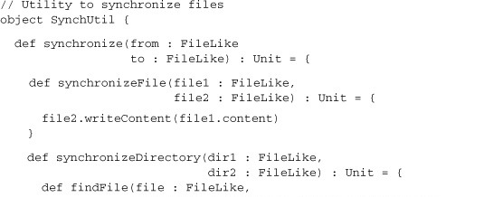</p>
      <p class="center1">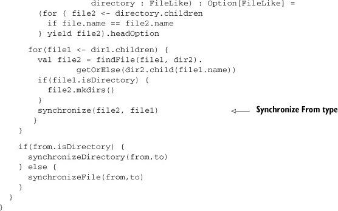</p>
      
      <p class="noind"><a id="iddle1983" class="calibre25"></a><a id="iddle1989" class="calibre25"></a>The <kbd class="calibre18">synchronize</kbd> function contains two helper methods, one for directory like objects and another for <kbd class="calibre18">FileLike</kbd> objects. The <kbd class="calibre18">synchronize</kbd> method then delegates to these two helper functions appropriately. There’s only one problem: a subtle bug is in the code!
         In the <kbd class="calibre18">synchronizeDirectory</kbd> helper method, the argument ordering is mixed up when recursively calling the <kbd class="calibre18">synchronize</kbd> method! This is the kind of error you can avoid by using the type system more. Let’s try to capture the <kbd class="calibre18">fromFileLike</kbd> type separate from the <kbd class="calibre18">toFileLike</kbd> type. These can ensure the method arguments have the correct order. Let’s try it out:
      </p>
      
      
      
      <h5 class="notetitle" id="ch07list5">Listing 7.5. <a id="ch07list5__title" class="calibre25"></a>Enforcing <kbd class="calibre18">To/From</kbd> types with type arguments
      </h5>
      
      <p class="center1">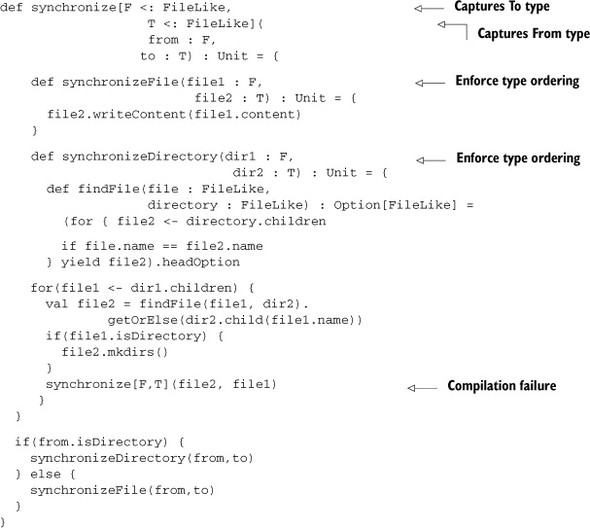</p>
      
      
      <p class="noind"><a id="iddle1324" class="calibre25"></a>The synchronize method now captures the <kbd class="calibre18">from</kbd> type in the type parameter <kbd class="calibre18">F</kbd> and the <kbd class="calibre18">to</kbd> type in the type parameter <kbd class="calibre18">T</kbd>. Great! Now there’s a compilation failure on the synchronize call. But the exception isn’t quite what’s desired. In fact,
         if the arguments are reordered, the exception remains.
      </p>
      
      <pre id="PLd0e17718" class="calibre8">synchronize.scala:47: error: type mismatch;
 found   : file1.type (with underlying type FileLike)
 required: F
        synchronize[F,T](file1, file2)
                         ^
synchronize.scala:47: error: type mismatch;
 found   : file2.type (with underlying type FileLike)
 required: T
        synchronize[F,T](file1, file2)</pre>
      
      <p class="noind">The compiler is complaining that the types returned from the <kbd class="calibre18">FileLike.children</kbd> method are not the captured type <kbd class="calibre18">F</kbd>. The <kbd class="calibre18">FileLike</kbd> interface doesn’t preserve the original type when getting children! One fix would be to modify the <kbd class="calibre18">FileLike</kbd> interface to be higher-kinded, and use the type parameter to enforce the static checks. Let’s modify the original <kbd class="calibre18">FileLike</kbd> interface to take a type parameter:
      </p>
      
      
      
      <h5 class="notetitle" id="ch07list6">Listing 7.6. <a id="ch07list6__title" class="calibre25"></a>Higher-kinded <kbd class="calibre18">FileLike</kbd></h5>
      
      <p class="center1">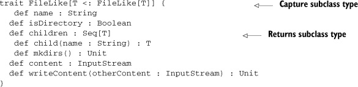</p>
      
      
      <p class="noind">This new definition of <kbd class="calibre18">FileLike</kbd> uses a recursive type constraint in its type parameter. The captured type <kbd class="calibre18">T</kbd> must be a subtype of <kbd class="calibre18">FileLike</kbd>. This type <kbd class="calibre18">T</kbd> is now returned by the <a id="iddle1045" class="calibre25"></a><a id="iddle1159" class="calibre25"></a><a id="iddle1323" class="calibre25"></a><a id="iddle1573" class="calibre25"></a><a id="iddle1582" class="calibre25"></a><a id="iddle1984" class="calibre25"></a><a id="iddle2060" class="calibre25"></a><kbd class="calibre18">child</kbd> and <kbd class="calibre18">children</kbd> methods. This interface works great for the <kbd class="calibre18">synchronization</kbd> method, except it suffers from one problem: the need to create <kbd class="calibre18">FileLike</kbd> wrappers for every <kbd class="calibre18">FileLike</kbd> object passed to the method. When synchronizing <kbd class="calibre18">java.io.File</kbd> and <kbd class="calibre18">java.net.URL</kbd> instances, a wrapper must be provided. There’s an alternative. Instead of defining the type <kbd class="calibre18">FileLike[T &lt;: FileLike[T]]</kbd>, we can define <kbd class="calibre18">FileLike[T]</kbd>. This new trait would allow interacting with any <kbd class="calibre18">T</kbd> as if it were a file and doesn’t require any inheritance relationship. This style of trait is called a <i class="calibre9">type class</i>.
      </p>
      
      
      <h4 id="ch07lev2sec6" class="calibre28">7.3.1. <a id="ch07lev2sec6__title" class="calibre25"></a>FileLike as a type class
      </h4>
      
      <p class="noind">The type class idiom, as it exists in Scala, takes this form: (1) a type class trait that acts as the accessor or utility
         library for a given type; (2) an object with the same name as the trait (this object contains all default implementations
         of the type class trait for various types); and (3) methods with context bounds where the type trait need to be used. Let’s
         look at the type class trait for our file synchronization library:
      </p>
      
      
      
      <h5 class="notetitle" id="ch07list7">Listing 7.7. <a id="ch07list7__title" class="calibre25"></a><kbd class="calibre18">FileLike</kbd> type class trait
      </h5>
      <pre id="PLd0e17855" class="calibre8">trait FileLike[T] {
  def name(file : T) : String
  def isDirectory(file : T) : Boolean
  def children(directory : T) : Seq[T]
  def child(parent : T, name : String) : T
  def mkdirs(file : T) : Unit
  def content(file : T) : InputStream
  def writeContent(file : T, otherContent : InputStream) : Unit
}</pre>
      
      <p class="noind">The <kbd class="calibre18">FileLike</kbd> type class trait looks similar to the higher-kinded <kbd class="calibre18">FileLike</kbd> trait, except for two key points. First, it doesn’t have any restriction on type <kbd class="calibre18">T</kbd>. The <kbd class="calibre18">FileLike</kbd> type class works for a particular type <kbd class="calibre18">T</kbd> and against it. This brings us to the second difference: All the methods take a parameter of type <kbd class="calibre18">T</kbd>. The <kbd class="calibre18">FileLike</kbd> type class isn’t expected to be a wrapper around another class, but instead it’s an <i class="calibre9">accessor</i> of data or state from another class. It allows us to keep a specific type, while treating it generically. Let’s look at what
         the synchronization method becomes using the <kbd class="calibre18">FileLike</kbd> type class trait.
      </p>
      
      <h5 class="notetitle" id="ch07list8">Listing 7.8. <a id="ch07list8__title" class="calibre25"></a>Synchronize method using type class
      </h5>
      <p class="center1">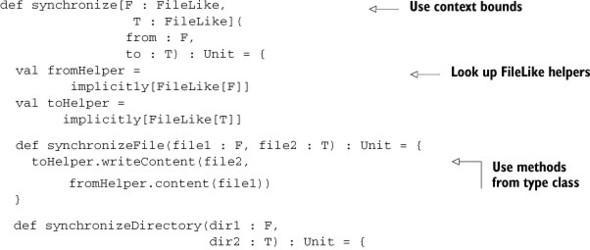</p>
      <p class="center1">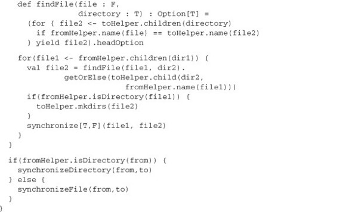</p>
      
      <p class="noind">Notice the use of the context bounds syntax for <kbd class="calibre18">FileLike</kbd>. As described in <a href="#ch07lev1sec1" class="calibre7">section 7.1</a>, this is equivalent to defining an implicit parameter for the <kbd class="calibre18">FileLike</kbd> on a given type. The next thing to notice is the <kbd class="calibre18">implicitly</kbd> method lookup of the <kbd class="calibre18">FileLike</kbd> parameters. Finally, every call made that utilizes type <kbd class="calibre18">F</kbd> or <kbd class="calibre18">T</kbd> uses the <kbd class="calibre18">FileLike</kbd> type class. The <kbd class="calibre18">synchronize</kbd> method can now work across many different types. Let’s see what happens when we use it on two <kbd class="calibre18">java.io.File</kbd> objects.
      </p>
      
      <pre id="PLd0e17937" class="calibre8">scala&gt; synchronize(
     |   new java.io.File("tmp1"),
     |   new java.io.File("tmp2"))
&lt;console&gt;:12: error: could not find implicit value for
evidence parameter of type FileLike[java.io.File]
       synchronize(new java.io.File("tmp1"), new java.io.File("tmp2"))</pre>
      
      <p class="noind">The compiler now complains that there’s no implicit value for <kbd class="calibre18">FileLike [java.io.File]</kbd>. This is the error message provided if we attempt to use a type that doesn’t have a corresponding type trait in the implicit
         scope. The error message isn’t quite what we want, and may be improved later, but it’s important to understand what this message
         means.
      </p>
      
      <p class="noind">The <kbd class="calibre18">synchronize</kbd> method requires a type trait implementation for <kbd class="calibre18">java.io.File</kbd>. The conventional way to provide default implicit values for a set of types is through a companion object to the type class
         trait. Let’s look at the following listing:
      </p>
      
      
      <p class="noind"></p><p class="calibre2"> </p><table cellspacing="5" width="100%" border="1" class="calibre10"><colgroup class="calibre19"><col width="550" class="calibre12"/></colgroup><tbody class="calibre13"><tr class="calibre14"><td class="calibre20"/>
            </tr></tbody></table><div class="calibre4">
         
         <b id="ch07sb05" class="calibre21">Implicit lookup error messages</b>
         
         <p class="noind"><a id="iddle1924" class="calibre25"></a><a id="iddle2130" class="calibre25"></a>As of Scala 2.8.1, type classes may be annotated to provide different error messages if the implicit lookup fails. Here’s
            an example for a Serializable type class:
         </p>
         
         <pre id="PLd0e17978" class="calibre8">scala&gt; @annotation.implicitNotFound(msg =
 | "Cannot find Serializable type class for ${T}")
 | trait Serializable[T]
defined trait Serializable
scala&gt; def foo[X : Serializable](x : X) = x
foo: [X](x: X)(implicit evidence$1: Serializable[X])X
scala&gt; foo(5)
 &lt;console&gt;:11: error: Cannot find Serializable type class for Int foo(5) ^</pre>
         
         </div>
      <table cellspacing="5" width="100%" border="1" class="calibre10"><colgroup class="calibre19"><col width="550" class="calibre12"/></colgroup><tbody class="calibre13"><tr class="calibre14"><td class="calibre20"/>
            </tr></tbody></table><p class="calibre2"> </p><h5 class="notetitle" id="ch07list9">Listing 7.9. <a id="ch07list9__title" class="calibre25"></a>Creating default type class implementation for <kbd class="calibre18">java.io.File</kbd></h5>
      
      <p class="center1">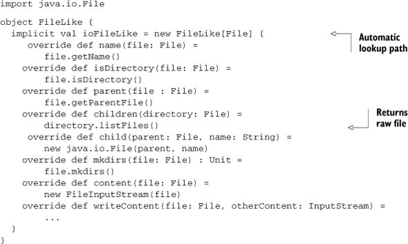</p>
      
      
      <p class="noind">Notice that this implementation of <kbd class="calibre18">FileLike</kbd> is simple. Most methods delegate directly to the underlying implementation. The <kbd class="calibre18">writeClient</kbd> method is more complex, so you can find the implementation in the source for this book. Now that the implicit <kbd class="calibre18">FileLike[java.io.File]</kbd> value is in the <kbd class="calibre18">FileLike</kbd> companion object, anytime the compiler needs to find an implicit value of type <kbd class="calibre18">FileLike[java.io.File]</kbd>, it’ll find one. Remember that the companion object is one of the last places checked for implicit values. This means a user
         can override the default implementation of <kbd class="calibre18">Filelike[java.io.File]</kbd> with their own by importing/defining it at the correct location. The type class pattern also provides many benefits.
      </p>
      
      
      
      
      <h4 id="ch07lev2sec7" class="calibre28">7.3.2. <a id="ch07lev2sec7__title" class="calibre25"></a>The benefits of type classes
      </h4>
      
      <p class="noind"><a id="iddle1117" class="calibre25"></a><a id="iddle2059" class="calibre25"></a>Type classes provide you with four primary benefits:
      </p>
      
      <p class="calibre22"></p>
      <ul class="calibre23"><li class="calibre24"><b class="calibre21"><i class="calibre9">Separation of abstractions—</i> </b>Type classes create new abstractions and allow other types to adapt, or be adapted, to the abstraction. This is helpful when
            creating an abstraction that works with preexisting types, and those types can’t be changed.
         </li>
         
         <li class="calibre24"><b class="calibre21"><i class="calibre9">Composability—</i> </b>You can use the context bound syntax to specify multiple types. This means you can easily require the existence of several
            type classes when writing your methods. This is far more flexible than expected for some abstract interface, or a combination
            of abstract interfaces. Type classes can also use inheritance to compose two type classes together into one implicit variable
            that provides both. Sometimes this may make sense, but in general type classes retain the most flexibility by avoiding inheritance.
         </li>
         
         <li class="calibre24"><b class="calibre21"><i class="calibre9">Overridable—</i> </b>Type classes allow you to override a default implementation through the implicit system. By putting an implicit value higher
            in the lookup chain, you can completely replace how a type class is implemented. This can be helpful when providing several
            type classes with various behaviors because the user can select a nondefault type class when needed.
         </li>
         
         <li class="calibre24"><b class="calibre21"><i class="calibre9">Type safety—</i> </b>You could use several mechanisms, such as reflection, instead of type classes. The primary reason to prefer type classes over
            these methods is the guaranteed type safety. When requiring a specific behavior using a type class, the compiler will warn
            if that behavior isn’t found, or isn’t yet implemented. Although reflection could be used to find methods on any class and
            call them, its failure occurs at runtime and isn’t guaranteed to occur during testing.
         </li>
         
      </ul><p class="noind">Type classes are a powerful design tool and can greatly improve the composability and reusability of methods and abstractions.
         These abstractions can also compose into higher-level type classes that are combinations of the lower-level ones.
      </p>
      
      <p class="noind">Here’s an example:</p>
      
      <pre id="PLd0e18084" class="calibre8">trait Serializable[T] { ... }
object Serializable {
  implicit def tuple2[T,V](implicit t : Serializable[T],
                          v : Serializable[V]) =
    new Serializable[(T,V)] { .. }
}</pre>
      
      <p class="noind">The <kbd class="calibre18">Serializable</kbd> type class is defined such that it can serialize a given type <kbd class="calibre18">T</kbd>. A <kbd class="calibre18">Serializable</kbd> type class for <kbd class="calibre18">Tuple2</kbd> values can be constructed using the <kbd class="calibre18">Serializable</kbd> type class against the types of the <kbd class="calibre18">Tuple2</kbd>. The method <kbd class="calibre18">Tuple2</kbd> accepts two type parameters, <kbd class="calibre18">T</kbd> and <kbd class="calibre18">V</kbd>, as well as implicit <kbd class="calibre18">Serializable</kbd> type classes associated with these parameters. The <kbd class="calibre18">Tuple2</kbd> method returns a <kbd class="calibre18">Serializable</kbd> type class for <kbd class="calibre18">(T,V)</kbd> tuples. Now any <kbd class="calibre18">Tuple2</kbd> of types that support the <kbd class="calibre18">Serializable</kbd> type class also supports the <kbd class="calibre18">Serializable</kbd> class.
      </p>
      
      <p class="noind"><a id="iddle1216" class="calibre25"></a><a id="iddle1944" class="calibre25"></a><a id="iddle2064" class="calibre25"></a><a id="iddle2072" class="calibre25"></a>Type classes start to show some of the power and complex constraints that can be encoded into the type system. This can be
         further extended to encode significantly complex type dependent algorithms and type level programming.
      </p>
      
      
      
      
      <h3 id="ch07lev1sec4" class="calibre17"><a id="ch07lev1sec4__title" class="calibre6"></a>7.4. Conditional execution using the type system
      </h3>
      
      <p class="noind">There comes a time in an algorithm’s life when it needs to do something rather clever. This clever behavior encodes portions
         of the algorithm into the type system so that it can execute at compile time. An example of this could be a sort algorithm.
         The sort algorithm can be written against the raw <kbd class="calibre18">Iterator</kbd> interface. But if I call <kbd class="calibre18">sort</kbd> against a vector, then I’d like to be able to utilize vector’s natural array separation in my sorting algorithm. Traditionally
         this has been solved with two mechanisms: overloading and overriding.
      </p>
      
      <p class="noind">Using overloading, the <kbd class="calibre18">sort</kbd> method is implemented in terms of <kbd class="calibre18">Iterable</kbd> and another is implemented in terms of <kbd class="calibre18">Vector</kbd>. The downside to overloading is that it prevents you from using named/default parameters, and it can suffer at compile time
         due to type erasure.
      </p>
      <p class="calibre2"> </p><table cellspacing="5" width="100%" border="1" class="calibre10"><colgroup class="calibre19"><col width="550" class="calibre12"/></colgroup><tbody class="calibre13"><tr class="calibre14"><td class="calibre20"/>
            </tr></tbody></table><h5 class="notetitle" id="ch07note04">Type Erasure</h5>
      
      
      <p class="noindclose"><i class="calibre9">Type erasure</i> refers to the runtime encoding of parameterized classes in Scala. The types used in parameters are erased at runtime into
         a lower type. This means that functions that operate on parameterized types can erase to the same bytecode on the JVM causing
         conflict. For example:
      </p>
      
      <pre id="PLd0e18203" class="calibre8">def sum(x : List[Int]) : Unit</pre>
      
      <p class="noindclose">and</p>
      
      <pre id="PLd0e18212" class="calibre8">def sum(x : List[Double]) : Unit</pre>
      
      <p class="noindclose">have the same runtime encoding <kbd class="calibre18">def sum(x : List[_]) : Unit</kbd>. The compiler will complain that the overloading isn’t allowed. This is one of the reasons to avoid overloading in Scala.
      </p>
      
      <table cellspacing="5" width="100%" border="1" class="calibre10"><colgroup class="calibre19"><col width="550" class="calibre12"/></colgroup><tbody class="calibre13"><tr class="calibre14"><td class="calibre20"/>
            </tr></tbody></table><p class="calibre2"> </p><p class="noind">Using overriding, the <kbd class="calibre18">sort</kbd> method is implemented against a base class. Each subclass that wishes to specialize the <kbd class="calibre18">sort</kbd> method should override the base class implementation with its own custom <kbd class="calibre18">sort</kbd> mechanism. In the case of <kbd class="calibre18">Iterable</kbd> and <kbd class="calibre18">Vector</kbd>, both would need to define the same sort method. The downside to overriding is that the type signatures must be the same
         and there must be an inheritance relationship between the classes owning a method.
      </p>
      
      <p class="noind">Overriding seems like a better option than overloading but imposes some strict limitations, especially the inheritance relationship.
         The inheritance restriction prevents external methods from using overriding behavior, limiting them to overloading and its
         drawbacks.
      </p>
      
      <p class="noind">The solution is to use the implicit system to associate a type class with the external types. For the <kbd class="calibre18">sort</kbd> method, it can be modified to accept an implicit parameter of type <kbd class="calibre18">Sorter</kbd>, where the <kbd class="calibre18">Sorter</kbd> class contains all the sort logic, as follows:
      </p>
      
      <pre id="PLd0e18258" class="calibre8">trait Sorter[A,B] {
  def sort(a : A) : B

}
def sort[A,B](col: A)(implicit val sorter: Sorter[A,B]) =
  sorter.sort(col)</pre>
      
      <p class="noind"><a id="iddle1473" class="calibre25"></a><a id="iddle2006" class="calibre25"></a><a id="iddle2023" class="calibre25"></a><a id="iddle2053" class="calibre25"></a><a id="iddle2141" class="calibre25"></a>The <kbd class="calibre18">Sorter</kbd> class is defined with a single method <kbd class="calibre18">sort</kbd>. The <kbd class="calibre18">sort</kbd> method accepts a value of type <kbd class="calibre18">A</kbd> and returns type <kbd class="calibre18">B</kbd>. It’s assumed that <kbd class="calibre18">A</kbd> and <kbd class="calibre18">B</kbd> are collections types. The <kbd class="calibre18">sort</kbd> method is constructed such that it accepts a collection of type <kbd class="calibre18">A</kbd> and an implicit <kbd class="calibre18">Sorter</kbd> object and sorts the collection.
      </p>
      
      <p class="noind">The sort algorithm selection has been turned into a type system problem. Each algorithm has been converted into a type and
         the selection has been encoded into the implicit system. This premise can be generalized to encode other types of problems
         into the type system.
      </p>
      
      <p class="noind">It’s simple to encode conditional logic into the type system. This can be done by encoding Boolean types into the type system.</p>
      
      <pre id="PLd0e18330" class="calibre8">sealed trait TBool {
  type If[TrueType &lt;: Up, FalseType &lt;: Up, Up] &lt;: Up
}</pre>
      
      <p class="noind">The <kbd class="calibre18">TBool</kbd> trait is defined having one type constructor <kbd class="calibre18">If</kbd>. This type constructor can be considered a method working inside the type system with types as its arguments and types as
         its results. The <kbd class="calibre18">If</kbd> type constructor takes three arguments: the type to return if the <kbd class="calibre18">TBool</kbd> is true, the type to return if the <kbd class="calibre18">TBool</kbd> is false, and an upper bound for the return values. Now let’s encode the true and false types into the type system.
      </p>
      
      <pre id="PLd0e18354" class="calibre8">class TTrue extends TBool {
  type If[TrueType &lt;: Up, FalseType &lt;: Up, Up] = TrueType
}

class TFalse extends TBool {
  type If[TrueType &lt;: Up, FalseType &lt;: Up, Up] = FalseType
}</pre>
      
      <p class="noind">The <kbd class="calibre18">TTrue</kbd> type represents true in the type system. Its <kbd class="calibre18">If</kbd> type constructor is overridden to return the first type passed in. The <kbd class="calibre18">TFalse</kbd> type represents false in the system. Its <kbd class="calibre18">If</kbd> type constructor is overridden to return the second type passed in. Let’s use these types:
      </p>
      
      <pre id="PLd0e18375" class="calibre8">scala&gt; type X[T &lt;: TBool] = T#If[String, Int, Any]
defined type alias X

scala&gt; val x : X[TTrue] = 5
&lt;console&gt;:11: error: type mismatch;
 found   : Int(5)
 required: X[booleans.TTrue]
       val x : X[TTrue] = 5
                          ^

scala&gt; val x : X[TTrue] = "Hi"
x: X[booleans.TTrue] = Hi</pre>
      
      <p class="noind">The <kbd class="calibre18">X</kbd> type constructor is created to accept an encoding Boolean type and return either the type <kbd class="calibre18">String</kbd> or the type <kbd class="calibre18">Int</kbd>. In the next line, the value x is defined with a <a id="iddle1217" class="calibre25"></a><a id="iddle1442" class="calibre25"></a><a id="iddle1452" class="calibre25"></a><a id="iddle1460" class="calibre25"></a><a id="iddle1861" class="calibre25"></a><a id="iddle2054" class="calibre25"></a><a id="iddle2073" class="calibre25"></a>type of <kbd class="calibre18">X[TTrue]</kbd>, but because the <kbd class="calibre18">X</kbd> type constructor is designed to return the type <kbd class="calibre18">String</kbd> when passed the <kbd class="calibre18">TTrue</kbd> type, compilation fails because the value is of type <kbd class="calibre18">Int</kbd>. The next definition of x succeeds because the <kbd class="calibre18">X</kbd> type constructor evaluates to <kbd class="calibre18">String</kbd> and the value is of type <kbd class="calibre18">String</kbd>.
      </p>
      
      <p class="noind">This mechanism of encoding logic into the type system can be useful at times. One example is heterogeneous lists.</p>
      
      
      <h4 id="ch07lev2sec8" class="calibre28">7.4.1. <a id="ch07lev2sec8__title" class="calibre25"></a>Heterogeneous typed list
      </h4>
      
      <p class="noind">One feature that’s lacking in the Scala standard library but that’s available in the Meta-Scala library is a heterogeneous
         typed list—that is, a type-safe list of values with unbounded size. This is similar to Scala’s <kbd class="calibre18">TupleN</kbd> classes, except that a heterogeneous typed list supports append operations to grow the list with additional types. The key
         to a type-safe list is encoding all the types of the list into the type system and preserving them throughout the usage of
         the list.
      </p>
      
      <p class="noind">Here’s an example of a heterogeneous list instantiation:</p>
      
      <pre id="PLd0e18477" class="calibre8">scala&gt; val x = "Hello" :: 5 :: false :: HNil
x: HCons[java.lang.String,HCons[Int,HCons[Boolean,HNil]]] =
  Hello :: 5 :: false :: Nil</pre>
      
      <p class="noind">The preceding line constructs a heterogeneous list comprising of a string, an integer, and a Boolean value. <kbd class="calibre18">HNil</kbd> is considered the terminating point of the list, similar to <kbd class="calibre18">Nil</kbd> for <kbd class="calibre18">scala.immutable.List</kbd>. The return type is interesting. It contains each of the types in the list embedded within <kbd class="calibre18">HCons</kbd> types, ending with <kbd class="calibre18">HNil</kbd>. The structure of the heterogeneous list is shown in the type. It’s a linked list of <kbd class="calibre18">cons</kbd> cells, holding a single value type and the rest of the list. There’s a special list called <kbd class="calibre18">HNil</kbd>, which represents the termination of a list or an empty list.
      </p>
      
      <p class="noind"><a href="#ch07fig01" class="calibre7">Figure 7.1</a> is of the heterogeneous list <kbd class="calibre18">"Hello" :: 5 :: false :: Nil</kbd>. The <kbd class="calibre18">HCons</kbd> rectangles represent each instance of <kbd class="calibre18">HCons</kbd>. The <kbd class="calibre18">HCons</kbd> cells are links in the linked list. They also carry around the current type of the head and the remaining type of the list.
         <kbd class="calibre18">HCons</kbd> is a linked list both in physical memory and in the type system. The <kbd class="calibre18">HNil</kbd> type represents the termination of the list and is similar to using <kbd class="calibre18">Nil</kbd> to terminate reference/pointer based linked lists. <kbd class="calibre18">HNil</kbd> will also represent empty in the type system.
      </p>
      
      
      
      <h5 class="notetitle" id="ch07fig01">Figure 7.1. <a id="ch07fig01__title" class="calibre25"></a>Sample heterogeneous list
      </h5>
      
      
      
      <p class="center1">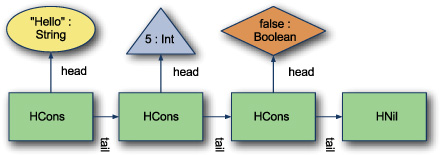</p>
      
      
      <p class="calibre2"> </p><table cellspacing="5" width="100%" border="1" class="calibre10"><colgroup class="calibre19"><col width="550" class="calibre12"/></colgroup><tbody class="calibre13"><tr class="calibre14"><td class="calibre20"/>
            </tr></tbody></table><h5 class="notetitle" id="ch07note05">Type Level Programming</h5>
      
      
      <p class="noindclose">The key to writing programs that partially execute within the type system is to encode all the required information into the
         type system. This is the same for creating <kbd class="calibre18">if/else</kbd> type constructs or heterogeneous lists.
      </p>
      
      <table cellspacing="5" width="100%" border="1" class="calibre10"><colgroup class="calibre19"><col width="550" class="calibre12"/></colgroup><tbody class="calibre13"><tr class="calibre14"><td class="calibre20"/>
            </tr></tbody></table><p class="calibre2"> </p><p class="noind"><a id="iddle1456" class="calibre25"></a>Let’s look at the implementation:
      </p>
      
      
      
      <h5 class="notetitle" id="ch07list10">Listing 7.10. <a id="ch07list10__title" class="calibre25"></a>Basic <kbd class="calibre18">HList</kbd> implementation
      </h5>
      
      <p class="center1">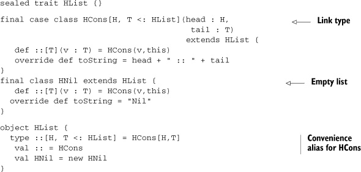</p>
      
      
      <p class="noind">This <kbd class="calibre18">HList</kbd> trait is a marker trait for constructing <kbd class="calibre18">HLists</kbd>. The <kbd class="calibre18">HCons</kbd> type encodes a link in a linked list. The value for the head is parameterized and can be any type. The tail is another <kbd class="calibre18">HList</kbd> but is parameterized as <kbd class="calibre18">T</kbd>. This is how the type system can capture the complete types of the heterogeneous list. The types are encoded in a linked
         list of <kbd class="calibre18">HCons</kbd> types as the values are stored in a linked list of <kbd class="calibre18">HCons</kbd> values. The <kbd class="calibre18">HNil</kbd> class also extends <kbd class="calibre18">HList</kbd> and represents an empty list or the end of list. Finally, the object <kbd class="calibre18">HList</kbd> is used to provide convenience aliases for the <kbd class="calibre18">HCons</kbd> and <kbd class="calibre18">HNil</kbd> types.
      </p>
      <p class="calibre2"> </p><table cellspacing="5" width="100%" border="1" class="calibre10"><colgroup class="calibre19"><col width="550" class="calibre12"/></colgroup><tbody class="calibre13"><tr class="calibre14"><td class="calibre20"/>
            </tr></tbody></table><h5 class="notetitle" id="ch07note06">Why the Duplicated :: Method?</h5>
      
      
      <p class="noindclose">You may be wondering why, in the simple <kbd class="calibre18">HList</kbd> implementation, the <kbd class="calibre18">::</kbd> method is defined in both the <kbd class="calibre18">HCons</kbd> and <kbd class="calibre18">HNil</kbd> classes with the same definition. The answer is the full type of the list is required when constructing a new <kbd class="calibre18">HCons</kbd> cell. If you placed this definition on <kbd class="calibre18">HList</kbd>, the captured type <kbd class="calibre18">T</kbd> in any new <kbd class="calibre18">HCons</kbd> cell would always be only <kbd class="calibre18">HList</kbd>. This negates the desired effect of preserving the type information in the list. The source code we include in this book,
         and describe later, has a solution to the problem by using a secondary trait, <kbd class="calibre18">HListLike[FullListType]</kbd>, that captures the complete type of the current list and defines the <kbd class="calibre18">::</kbd> method using this type.
      </p>
      
      <table cellspacing="5" width="100%" border="1" class="calibre10"><colgroup class="calibre19"><col width="550" class="calibre12"/></colgroup><tbody class="calibre13"><tr class="calibre14"><td class="calibre20"/>
            </tr></tbody></table><p class="calibre2"> </p><p class="noind">The <kbd class="calibre18">::</kbd> and <kbd class="calibre18">HNil</kbd> types are encoded as a class with corresponding value because they must be used in type signatures <i class="calibre9">and</i> expressions. The class types allow them to be directly referenced in type signatures, and the values allow them to be used
         as expressions. Let’s look at an example:
      </p>
      
      <pre id="PLd0e18675" class="calibre8">scala&gt; val x : ( String :: Int :: Boolean :: HNil) =
    "Hi" :: 5 :: false :: HNil
x: HList.::[String,HList.::[Int,HList.::[Boolean,HNil]]] =
    Hi :: 5 :: false :: Nil</pre>
      
      <p class="noind"><a id="iddle1453" class="calibre25"></a>The <kbd class="calibre18">val x</kbd> is defined with type <kbd class="calibre18">String :: Int :: Boolean :: HNil</kbd> and the expression <kbd class="calibre18">"Hi" :: 5 :: false :: HNil</kbd>. If we made <kbd class="calibre18">HNil</kbd> an object, the type would instead be <kbd class="calibre18">String :: Int :: Boolean :: HNil.type</kbd>.
      </p>
      
      <p class="noind">The <kbd class="calibre18">HCons</kbd> class was defined as a case class. Combined with the <kbd class="calibre18">HNil</kbd> value, this enables us to extract typed values from a list using pattern matching. Let’s pull the values out of the <kbd class="calibre18">x</kbd> list constructed earlier:
      </p>
      
      <pre id="PLd0e18717" class="calibre8">scala&gt; val one :: two :: three :: HNil = x
one: java.lang.String = Hi
two: Int = 5
three: Boolean = false</pre>
      
      <p class="noind">The first line is a pattern match value assignment from list x. The resulting types of one, two, and three are <kbd class="calibre18">String</kbd>, <kbd class="calibre18">Int</kbd>, and <kbd class="calibre18">Boolean</kbd> respectively, and the values are extracted correctly. You can also use this extraction to pull out portions of the list;
         for example, let’s pull the first two elements from the x list:
      </p>
      
      <pre id="PLd0e18735" class="calibre8">scala&gt; val first :: second :: rest = x
first: String = Hi
second: Int = 5
rest: HList.::[Boolean,HNil] = false :: Nil</pre>
      
      <p class="noind">This line extracts the first and second value into variables called <kbd class="calibre18">first</kbd> and <kbd class="calibre18">second</kbd>. The rest of the list is placed into a variable called <kbd class="calibre18">rest</kbd>. Notice the types of each: first and second have the correct types from the portion of the list, and the rest variables is
         of type <kbd class="calibre18">::[Boolean,HNil]</kbd> or <kbd class="calibre18">Boolean :: HNil</kbd>. This mechanism of extracting typed values from the list is handy, but it’d be nice to have an indexing operation.
      </p>
      
      <p class="noind">The indexing operation can be encoded directly into the type system using functions. Let’s take a look at the following listing:</p>
      
      <pre id="PLd0e18762" class="calibre8">scala&gt; def indexAt2of3[A,B,C]( x : (A :: B :: C :: HNil)) =
     |   x match {
     |     case a :: b :: c :: HNil =&gt; b
     |   }
indexAt2of3: [A,B,C](x: HList.::[A,HList.::[B,HList.::[C,HNil]]])B

scala&gt; indexAt2of3( 1 :: false :: "Hi" :: HNil )
res5: Boolean = false</pre>
      
      <p class="noind">The <kbd class="calibre18">indexAt2of3</kbd> method takes a heterogeneous list of three elements and returns the second element. The next call shows that the method works
         and will infer the types from the heterogeneous list.
      </p>
      
      <p class="noind">This direct encoding of indexing operations is less than ideal. An explosion of methods is required to index elements into
         lists of various sizes. The heterogeneous list would also have support methods like <kbd class="calibre18">insert into index</kbd> and <kbd class="calibre18">remove from index</kbd>. These operations would have to be duplicated if we used this style of direct encoding. Instead, let’s construct a general
         solution to the problem.
      </p>
      
      
      
      
      <h4 id="ch07lev2sec9" class="calibre28">7.4.2. <a id="ch07lev2sec9__title" class="calibre25"></a>IndexedView
      </h4>
      
      <p class="noind"><a id="iddle1218" class="calibre25"></a><a id="iddle1419" class="calibre25"></a><a id="iddle1520" class="calibre25"></a><a id="iddle2074" class="calibre25"></a>Let’s construct a type that looks at a particular index and can perform various operations like adding, retrieving, or removing
         the element at the index. This type is called an <kbd class="calibre18">IndexedView</kbd> as it represents a view of the heterogeneous list at a given index into the list. To be able to append or remove elements
         from the list, the view must have access to the types preceding the current index and the types after the current index. The
         basic trait looks like this:
      </p>
      
      
      
      <h5 class="notetitle" id="ch07list11">Listing 7.11. <a id="ch07list11__title" class="calibre25"></a><kbd class="calibre18">IndexedView</kbd></h5>
      <pre id="PLd0e18827" class="calibre8">sealed trait IndexedView {
 type Before &lt;: HList
 type After &lt;: HList
 type At
 def fold[R](f : (Before, At, After) =&gt; R) : R
 def get = fold( (_, value, _) =&gt; value)
}</pre>
      
      <p class="noind">The <kbd class="calibre18">IndexedView</kbd> trait defines three abstract types. <kbd class="calibre18">Before</kbd> is the types of all the elements in the list before the current index. <kbd class="calibre18">After</kbd> is the types of all elements in the list after the current index. <kbd class="calibre18">At</kbd> is the type at the current index of the list. The <kbd class="calibre18">IndexedView</kbd> trait defines two operations: <kbd class="calibre18">fold</kbd> and <kbd class="calibre18">get</kbd>. <kbd class="calibre18">Fold</kbd> is used to look at the entire list and return a given value. <kbd class="calibre18">Fold</kbd> takes a function that will look at the before, at and after portions of the list. This allows us to use fold to perform operations
         centered at this current index.
      </p>
      
      <p class="noind">The <kbd class="calibre18">get</kbd> method is implemented in terms of <kbd class="calibre18">fold</kbd> to return the value at the current index.
      </p>
      
      <p class="noind"><a href="#ch07fig02" class="calibre7">Figure 7.2</a> shows the <kbd class="calibre18">IndexedView</kbd> at the third index of heterogeneous list <kbd class="calibre18">"Hello" :: 5 :: false :: Nil</kbd>. At this index, the <kbd class="calibre18">Before</kbd> type would be <kbd class="calibre18">String</kbd> :: <kbd class="calibre18">Int</kbd> ::<kbd class="calibre18">HNil</kbd>. Notice that the <kbd class="calibre18">Before</kbd> type isn’t exactly the same as the previous <kbd class="calibre18">HCons</kbd> cell, because it’s terminated with <kbd class="calibre18">HNil</kbd> after the previous two types. The important aspect of the <kbd class="calibre18">IndexedView</kbd> is that it gives us direct access to the type of the current value—that is, we can name the current type using the type parameter
         <kbd class="calibre18">At</kbd>. It also preserves the types preceding and following the current type such that we can use them with aggregate functions.
      </p>
      
      
      
      <h5 class="notetitle" id="ch07fig02">Figure 7.2. <a id="ch07fig02__title" class="calibre25"></a>IndexedView
      </h5>
      
      
      
      <p class="center1">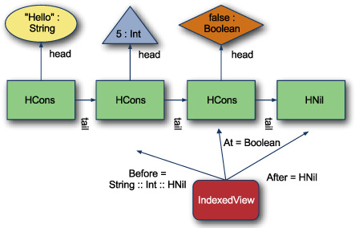</p>
      
      
      
      <p class="noind">Constructing an <kbd class="calibre18">IndexedView</kbd> at an index in the list is done recursively. Let’s start with the base case of defining an <kbd class="calibre18">IndexedView</kbd> at the first index of a list.
      </p>
      
      <pre id="PLd0e18934" class="calibre8">class HListView0[H, T &lt;: HList](val list : H :: T)
    extends IndexedView {
  type Before = HNil
  type After = T
  type At = H
  def fold[R](f : (Before, At, After) =&gt; R): R =
    f(HNil, list.head, list.tail)
}</pre>
      
      
      <p class="noind"></p><p class="calibre2"> </p><table cellspacing="5" width="100%" border="1" class="calibre10"><colgroup class="calibre19"><col width="550" class="calibre12"/></colgroup><tbody class="calibre13"><tr class="calibre14"><td class="calibre20"/>
            </tr></tbody></table><div class="calibre4">
         
         <b id="ch07sb06" class="calibre21">IndexedView folds</b>
         
         <p class="noind"><a id="iddle1458" class="calibre25"></a>We can use the fold operation on <kbd class="calibre18">IndexedView</kbd> to implement many methods that need an index, including <kbd class="calibre18">remove</kbd>, <kbd class="calibre18">append</kbd>, and <kbd class="calibre18">split</kbd>. These methods require a join operation to join two heterogeneous lists. If this <kbd class="calibre18">join</kbd> method was called <kbd class="calibre18">:::</kbd>, similar to normal list joins, we could implement these methods on <kbd class="calibre18">IndexedView</kbd> as:
         </p>
         
         <pre id="PLd0e18976" class="calibre8">def remove = fold {
 (before, _, after) =&gt; before ::: after
}

def insertBefore[B](x : B) = fold {
 (before, current, after) =&gt;
 before ::: (x :: current :: after)
}

def replace[B](x : B) = fold {
 (before, _, after) =&gt; before ::: (x :: after)
}

def insertAfter[B](x : B) = fold {
 (before, current, after) =&gt; before ::: (current :: x :: after)
}</pre>
         
         <p class="noind">The <kbd class="calibre18">:::</kbd> method isn’t covered in this book and left as an exercise for the reader. For implementation help, see the Meta-Scala library
            at <a href="http://mng.bz/Zw9w" class="calibre7">http://mng.bz/Zw9w</a>.
         </p>
         
      </div>
      <table cellspacing="5" width="100%" border="1" class="calibre10"><colgroup class="calibre19"><col width="550" class="calibre12"/></colgroup><tbody class="calibre13"><tr class="calibre14"><td class="calibre20"/>
            </tr></tbody></table><p class="calibre2"> </p><p class="noind">The class <kbd class="calibre18">HListView0</kbd> accepts a list of head type <kbd class="calibre18">H</kbd> and a tail type of <kbd class="calibre18">T</kbd>. The <kbd class="calibre18">Before</kbd> type is an empty list, as there are no elements before for the first index. The <kbd class="calibre18">After</kbd> type is the same as the captured type of the list’s tail, <kbd class="calibre18">T</kbd>. The <kbd class="calibre18">At</kbd> type is the type of the current head of the list, <kbd class="calibre18">H</kbd>. The <kbd class="calibre18">fold</kbd> method is implemented such that it calls the function <kbd class="calibre18">f</kbd> with an empty list, the head and the tail of the list.
      </p>
      
      <p class="noind">The next case of <kbd class="calibre18">IndexedView</kbd> is the recursive case. Let’s create an instance of <kbd class="calibre18">IndexedView</kbd> that delegates to another <kbd class="calibre18">IndexedView</kbd>. The idea is that for index <kbd class="calibre18">N</kbd>, there are <kbd class="calibre18">N-1</kbd> classes that deconstruct the <kbd class="calibre18">HList</kbd>’s type to the point where the <kbd class="calibre18">HListView0</kbd> class can be used. Let’s call this recursive class <kbd class="calibre18">HListViewN</kbd>.
      </p>
      
      
      <pre id="PLd0e19054" class="calibre8">final class HListViewN[H, NextIdxView &lt;: IndexedView](
    h : H, next : NextIdxView) extends IndexedView {
  type Before = H :: NextIdxView#Before
  type At = NextIdxView#At
  type After = NextIdxView#After
  def fold[R](f : (Before, At, After) =&gt; R) : R =
    next.fold( (before, at, after) =&gt;
      f(HCons(h, before), at, after) )
}</pre>
      
      <p class="noind"><a id="iddle1457" class="calibre25"></a><a id="iddle1696" class="calibre25"></a>The <kbd class="calibre18">HListViewN</kbd> class has two type parameters: <kbd class="calibre18">H</kbd> and <kbd class="calibre18">NextIdxView</kbd>. <kbd class="calibre18">H</kbd> is the type at the current head of the list. <kbd class="calibre18">NextIdxView</kbd> is the type of the next <kbd class="calibre18">IndexedView</kbd> class used to construct an <kbd class="calibre18">IndexedView</kbd>. The <kbd class="calibre18">Before</kbd> type is the current type parameter <kbd class="calibre18">H</kbd> appended to the next indexer’s <kbd class="calibre18">HList</kbd>. The <kbd class="calibre18">At</kbd> type is deferred to the next indexer. The <kbd class="calibre18">After</kbd> type is also deferred to the next indexer. The side effect of this is that the <kbd class="calibre18">At</kbd> and <kbd class="calibre18">After</kbd> types will be determined by an <kbd class="calibre18">HListView0</kbd> and carried down the recursive chain by the <kbd class="calibre18">HListViewN</kbd> classes. Finally, the fold operation calls <kbd class="calibre18">fold</kbd> on the next <kbd class="calibre18">IndexedView</kbd> and wraps the before list with the current value. The <kbd class="calibre18">HListViewN</kbd> expands the previous types of an <kbd class="calibre18">IndexedView</kbd>.
      </p>
      
      <p class="noind"><a href="#ch07fig03" class="calibre7">Figure 7.3</a> shows the recursive nature of <kbd class="calibre18">HListViewN</kbd>. To construct an <kbd class="calibre18">IndexedView</kbd> at the third element of an <kbd class="calibre18">HList</kbd> requires two <kbd class="calibre18">HListViewN</kbd> classes linked to an <kbd class="calibre18">HListView0</kbd> class. The <kbd class="calibre18">HListView0</kbd> class points directly at the cons cell, which holds the third element of the <kbd class="calibre18">HList</kbd>. Each instance of the <kbd class="calibre18">HListViewN</kbd> class appends one of the previous types of the list to the original <kbd class="calibre18">HListView0</kbd> class. The outer <kbd class="calibre18">HListViewN</kbd> class holds the correct types for an <kbd class="calibre18">IndexedView</kbd> of the original list at element 2.
      </p>
      
      
      
      <h5 class="notetitle" id="ch07fig03">Figure 7.3. <a id="ch07fig03__title" class="calibre25"></a>Recursive <kbd class="calibre18">HListViewN</kbd></h5>
      
      <p class="center1">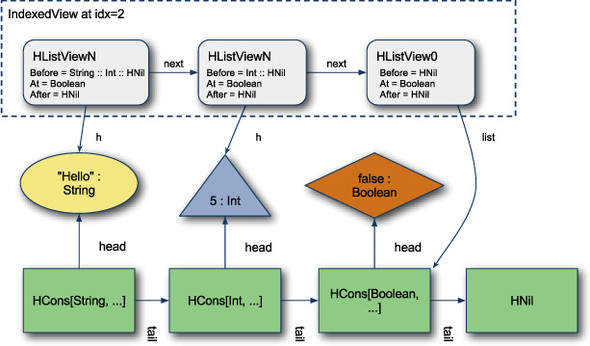</p>
      
      
      <p class="noind">One important piece to mention about the <kbd class="calibre18">HListViewN</kbd> classes is that they retain references to the elements of the list and recursively rebuild portions of the list in <a id="iddle1300" class="calibre25"></a><a id="iddle1443" class="calibre25"></a><a id="iddle1461" class="calibre25"></a><a id="iddle1687" class="calibre25"></a><a id="iddle1978" class="calibre25"></a><a id="iddle2119" class="calibre25"></a>their <kbd class="calibre18">fold</kbd> method. You can see this in the diagram with the arrows labeled “h”. The runtime performance implications are that the farther
         down a list an index goes, the more recursion required to perform operations.
      </p>
      
      <p class="noind">Now that there’s a mechanism to construct <kbd class="calibre18">IndexedView</kbd> classes at arbitrary depths of the <kbd class="calibre18">HList</kbd>, there must be a method of constructing these classes. Let’s split this process into two. The first will be a mechanism that
         takes a list and builds a type for the view at index N of that list. The second mechanism is a way of constructing the recursive
         <kbd class="calibre18">IndexedView</kbd> types if the final type is known.
      </p>
      
      <p class="noind">For the first mechanism, let’s add a type to the <kbd class="calibre18">HList</kbd> class that will construct an <kbd class="calibre18">IndexedView</kbd> at a given index value for the current list.
      </p>
      
      <pre id="PLd0e19246" class="calibre8">sealed trait HList {
  type ViewAt[Idx &lt;: Nat] &lt;: IndexedView
}</pre>
      
      <p class="noind">The <kbd class="calibre18">ViewAt</kbd> type constructor is defined as constructing a subclass of <kbd class="calibre18">IndexedView</kbd>. The full value will be assigned in the <kbd class="calibre18">HCons</kbd> and <kbd class="calibre18">HNil</kbd> classes respectively. The <kbd class="calibre18">ViewAt</kbd> type constructor takes a parameter of type <kbd class="calibre18">Nat</kbd>. <kbd class="calibre18">Nat</kbd> is a type that we create for this purpose representing natural numbers encoded into the type system. <kbd class="calibre18">Nat</kbd> is constructed the same way naturally numbers are constructed in mathematical proofs, by building from a starting point.
      </p>
      
      
      
      <h5 class="notetitle" id="ch07list12">Listing 7.12. <a id="ch07list12__title" class="calibre25"></a>Natural numbers encoded into types
      </h5>
      
      <p class="center1">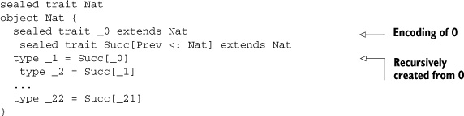</p>
      
      
      <p class="noind">The trait <kbd class="calibre18">Nat</kbd> is used to mark natural number types. The trait <kbd class="calibre18">_0</kbd> is used to denote the starting point for all natural numbers, zero. The <kbd class="calibre18">Succ</kbd> trait isn’t directly referenced but is used to construct the rest of the natural number set (or at least as many as we wish
         to type). The types <kbd class="calibre18">_1</kbd> through <kbd class="calibre18">_22</kbd> are then defined using the <kbd class="calibre18">Succ</kbd> trait applied to the previously defined type.
      </p>
      
      <p class="noind">The <kbd class="calibre18">Nat</kbd> types <kbd class="calibre18">_0</kbd> through <kbd class="calibre18">_22</kbd> can now be used to denote indexes into an <kbd class="calibre18">HList</kbd>. The next step is to use these index values to construct the <kbd class="calibre18">IndexedView</kbd> type for an <kbd class="calibre18">HList</kbd> at that index. To do so, let’s construct a mechanism to pass type lambdas into natural numbers and build complete types.
      </p>
      
      <pre id="PLd0e19332" class="calibre8">sealed trait Nat {
  type Expand[NonZero[N &lt;: Nat] &lt;: Up, IfZero &lt;: Up, Up] &lt;: Up
}</pre>
      
      <p class="noind">The <kbd class="calibre18">Nat</kbd> trait is given a new type called <kbd class="calibre18">Expand</kbd>. <kbd class="calibre18">Expand</kbd> takes three type parameters. The first is a type <kbd class="calibre18">lambda</kbd> that’s applied against the previous natural number if the <kbd class="calibre18">Nat</kbd> <a id="iddle1459" class="calibre25"></a><a id="iddle1704" class="calibre25"></a>isn’t <kbd class="calibre18">_0</kbd>. The second is the type returned if the natural number is <kbd class="calibre18">_0</kbd>. The third type is an upper bound for the first two types to avoid compilation type inference issues. Let’s implement this
         type on the <kbd class="calibre18">_0</kbd> and <kbd class="calibre18">Succ</kbd> traits:
      </p>
      
      <pre id="PLd0e19380" class="calibre8">sealed trait _0 extends Nat {
    type Expand[NonZero[N &lt;: Nat] &lt;: Ret, IfZero &lt;: Ret, Ret] =
      IfZero
  }
  sealed trait Succ[Prev &lt;: Nat] extends Nat {
    type Expand[NonZero[N &lt;: Nat] &lt;: Ret, IfZero &lt;: Ret, Ret] =
      NonZero[Prev]
  }</pre>
      
      <p class="noind">The <kbd class="calibre18">_0</kbd> trait defines its <kbd class="calibre18">Expand</kbd> type to be exactly the second parameter. This is similar to a method call that returns its second parameter. The <kbd class="calibre18">Succ</kbd> trait defines its expand method to call the type constructor passed into the first parameter against the previous <kbd class="calibre18">Nat</kbd> type. This can be used to recursively build a type by providing a type that uses itself in the <kbd class="calibre18">NonZero</kbd> type attribute. Let’s use this trick and define the <kbd class="calibre18">ViewAt</kbd> type on <kbd class="calibre18">HList</kbd>.
      </p>
      
      
      <p class="center1">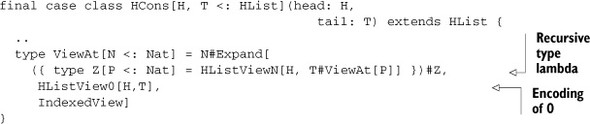</p>
      
      
      <p class="noind">The <kbd class="calibre18">ViewAt</kbd> type is defined as an expansion against the natural number parameter <kbd class="calibre18">N</kbd>. The first type parameter to <kbd class="calibre18">Expand</kbd> is the recursive type constructor. This type constructor is defined as <kbd class="calibre18">HListViewN[H, T#ViewAt[P]]</kbd>. Deconstructing, the type is an <kbd class="calibre18">HListViewN</kbd> comprised of the current head type and the tail’s <kbd class="calibre18">ViewAt</kbd> type applied to the previous natural number (or <kbd class="calibre18">N-1</kbd>). Eventually, there will be a <kbd class="calibre18">ViewAt</kbd> called for <kbd class="calibre18">_0</kbd> that will return the second parameter, <kbd class="calibre18">HListView0[H,T]</kbd>. If a <kbd class="calibre18">Nat</kbd> index is passed into the <kbd class="calibre18">ViewAt</kbd> type that goes beyond the size of the list, it will fail at compile time with the following message:
      </p>
      
      <pre id="PLd0e19457" class="calibre8">scala&gt; val x = 5 :: "Hi" :: true :: HNil
x: HCons[Int,HCons[java.lang.String,HCons[Boolean,HNil]]] =
    5 :: Hi :: true :: HNil

scala&gt; type X = x.ViewAt[Nat._11]
&lt;console&gt;:11: error: illegal cyclic reference involving type ViewAt
       type X = x.ViewAt[Nat._11]</pre>
      
      <p class="noind">The compiler will issue an illegal cyclic reference in this instance. Although not exactly the error message desired in this
         situation, the compiler prevents the invalid index operation.
      </p>
      
      <p class="noind">Now that the indexed type can be constructed for a given index and a given <kbd class="calibre18">HList</kbd>, let’s encode the construction of the <kbd class="calibre18">IndexedView</kbd> into the implicit system. We can do this with a recursive implicit lookup against the constructed <kbd class="calibre18">IndexedView</kbd> type.
      </p>
      
      
      <pre id="PLd0e19480" class="calibre8">object IndexedView {
  implicit def index0[H, T &lt;: HList](list : H :: T) : HListView0[H,T] =
    new HListView0[H,T](list)
  implicit def indexN[H, T &lt;: HList, Prev &lt;: IndexedView](
     list: (H :: T))(
     implicit indexTail: T =&gt; Prev): HListViewN[H,Prev] =
       new HListViewN[H, Prev](list.head, indexTail(list.tail))
}</pre>
      
      <p class="noind"><a id="iddle1521" class="calibre25"></a><a id="iddle1784" class="calibre25"></a>The <kbd class="calibre18">IndexedView</kbd> companion object is given two implicit functions: <kbd class="calibre18">index0</kbd> and <kbd class="calibre18">indexN</kbd>. The function <kbd class="calibre18">index0</kbd> takes an <kbd class="calibre18">HList</kbd> and constructs an indexed view of <kbd class="calibre18">index_0</kbd> on that list. The function <kbd class="calibre18">indexN</kbd> takes an <kbd class="calibre18">HList</kbd> and an implicit conversion of the tail of the <kbd class="calibre18">HList</kbd> into an <kbd class="calibre18">IndexedView</kbd> and returns a new <kbd class="calibre18">IndexedView</kbd> of the complete list. The type parameters on <kbd class="calibre18">indexN</kbd> preserve the types of the head and tail of the list as well as the full type of the <kbd class="calibre18">IndexedView</kbd> used against the tail of the list.
      </p>
      
      <p class="noind">Now when the compiler looks for a type <kbd class="calibre18">Function1[Int :: Boolean :: Nil, HListViewN[Int, HListView0[Boolean, HNil]]]</kbd>, the <kbd class="calibre18">indexN</kbd> function will be called with <kbd class="calibre18">H</kbd> = <kbd class="calibre18">Int</kbd> and <kbd class="calibre18">T</kbd> = <kbd class="calibre18">Boolean :: HNil</kbd> and <kbd class="calibre18">Prev</kbd> = <kbd class="calibre18">?</kbd>. The compiler will then look for an implicit <kbd class="calibre18">Function1[Boolean :: Nil, ? &lt;: IndexedView]</kbd>. This is satisfied by the <kbd class="calibre18">index0</kbd> implicit, and the <kbd class="calibre18">Prev</kbd> type is filled in as <kbd class="calibre18">HListView0[Boolean, HNil]</kbd>. The full implicit value is found, and a constructor of an <kbd class="calibre18">IndexedView</kbd> from a <kbd class="calibre18">HList</kbd> is available. Now let’s write the indexing method itself:
      </p>
      
      <pre id="PLd0e19583" class="calibre8">trait HCons[H, T &lt;: HList] extends HList {
  type FullType = HCons[H,T]
  def viewAt[Idx &lt;: Nat](
      implicit in: FullType =&gt; FullType#ViewAt[Idx]) =
    in(this.asInstanceOf[FullType])
  ...
}</pre>
      
      <p class="noind">The <kbd class="calibre18">viewAt</kbd> method is defined as taking a type parameter of the <kbd class="calibre18">Nat</kbd> index and an implicit function that constructs the <kbd class="calibre18">IndexedView</kbd> from the current list. Now the heterogeneous lists support indexing.
      </p>
      
      <pre id="PLd0e19601" class="calibre8">scala&gt; val x = 5 :: "Hi" :: true :: HNil
x: HCons[Int,HCons[java.lang.String,HCons[Boolean,HNil]]] =
    5 :: Hi :: true :: HNil

scala&gt; x.viewAt[Nat._1].get
res3: java.lang.String = Hi</pre>
      
      <p class="noind">The first line in the example constructs a heterogeneous list and the second shows how to use a natural number to index into
         the list (assuming <kbd class="calibre18">_0</kbd> is the first element of the list).
      </p>
      
      <p class="noind">The heterogeneous list demonstrates the power of Scala’s type system. It encodes an arbitrary sequence of types and allows
         type-safe indexing of this sequence. Most type-level programming problems within Scala can be handled using the mechanisms
         seen with heterogeneous lists, in particular:
      </p>
      
      <p class="calibre22"></p>
      <ul class="calibre23"><li class="calibre24"><a id="iddle1930" class="calibre25"></a><a id="iddle1985" class="calibre25"></a>Divide and Conquer: Use recursion to loop over types
         </li>
         
         <li class="calibre24">Encode Boolean and integer logic into types</li>
         
         <li class="calibre24">Use implicit lookup to construct recursive types or return types</li>
         
      </ul><p class="noind">This type-level programming is the most advanced usage of the Scala type system that may be required for general development.
         The simple build tool (SBT) is used to build Scala code that utilizes a different form of the <kbd class="calibre18">HList</kbd> presented earlier. Although <kbd class="calibre18">HLists</kbd> are complicated, the SBT tool introduces them in a way that’s simple and elegant for the user. It’s worth going to <a href="http://mng.bz/Cdgl" class="calibre7">http://mng.bz/Cdgl</a> and reading how they’re used.
      </p>
      
      
      
      
      <h3 id="ch07lev1sec5" class="calibre17"><a id="ch07lev1sec5__title" class="calibre6"></a>7.5. Summary
      </h3>
      
      <p class="noind">In this chapter, you learned the advanced techniques for utilizing Scala’s type system. Implicits allow the capturing of runtime
         and compile time type constraints. You can use type classes as a general purpose abstraction to associate types with functionality.
         They are one of the most powerful forms of abstraction within Scala. Finally, we explored in depth the conditional execution
         and type level programming. This advanced technique tends to be used in core libraries and not as much in user code.
      </p>
      
      <p class="noind">The main theme in all of these sections is that Scala allows developers to preserve type information while writing low-level
         generic functions. The more type information that can be preserved, the more errors the compiler can catch. For example, the
         <kbd class="calibre18">synchronize</kbd> method defined in <a href="#ch07lev1sec3" class="calibre7">section 7.3</a> was able to prevent accidental argument reversal by capturing the <kbd class="calibre18">from</kbd> and <kbd class="calibre18">to</kbd> types. The <kbd class="calibre18">HList</kbd> class allows developers to create arbitrarily long typed lists of elements that can be modified directly rather than passing
         around a <kbd class="calibre18">List[Any]</kbd> and having to determine the types of each element at runtime. This also prevents users from placing the wrong type at a given
         index.
      </p>
      
      <p class="noind">Writing low-level generic functions is also important. The less a method or class assumes about its arguments or types, the
         more flexible it is and the more often it can be reused. In <a href="#ch07lev1sec2" class="calibre7">section 7.2</a>, the implicit available of the <kbd class="calibre18">&lt;:&lt;</kbd> class was used to add a convenience method directly on the <kbd class="calibre18">Set</kbd> class.
      </p>
      
      <p class="noind">The next chapter covers the Scala collections library, and we make heavy use of the concepts defined in this chapter. In particular,
         the collections library attempts to return the most specific collection type possible after any method call. This has some
         interesting consequences, as you’ll see.
      </p>
      
      
      
      
      <div class="calibre4" id="calibre_pb_15"></div></div>

{% endraw %}

